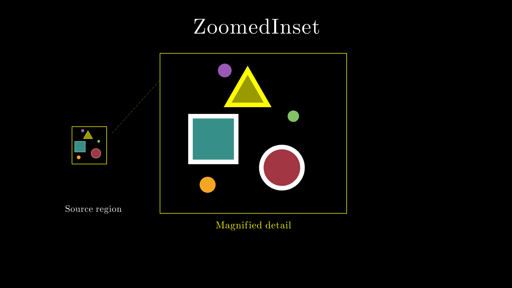

Advanced Examples¶
These are longer, self-contained animations that recreate popular math and science videos (many inspired by 3Blue1Brown). They demonstrate how VectorMation can be used for real-world projects. All scripts are in the examples/advanced/ directory.
python examples/advanced/<script_name>.py
Physics & Simulation¶
Double Pendulum
Chaotic motion from a simple system. Two connected pendulums produce wildly different trajectories from nearly identical initial conditions, illustrating sensitive dependence. Uses the exact Lagrangian equations of motion.
Show code
"""Double Pendulum — chaotic motion from a simple system.
Two connected pendulums produce wildly different trajectories from
nearly identical initial conditions, illustrating sensitive dependence
(chaos). The simulation uses the exact Lagrangian equations of motion.
"""
from vectormation.objects import *
import math
canvas = VectorMathAnim()
canvas.set_background()
# ── Parameters ────────────────────────────────────────────────────────
g = 9.81
L1, L2 = 1.0, 1.0 # arm lengths (meters)
m1, m2 = 1.0, 1.0 # masses
scale = 200 # pixels per meter
# Initial conditions: two pendulums with slightly different starting angles
configs = [
{'theta1': 2.0, 'theta2': 2.0, 'color': '#58C4DD', 'label': 'A'},
{'theta1': 2.01, 'theta2': 2.0, 'color': '#FF6B6B', 'label': 'B'},
]
dt = 1 / 240
T = 12.0
n_steps = int(T / dt)
# ── Simulate ──────────────────────────────────────────────────────────
def simulate_double_pendulum(th1, th2, w1=0, w2=0):
"""Runge-Kutta 4 integration of the double pendulum equations."""
def derivs(state):
t1, t2, o1, o2 = state
delta = t1 - t2
cos_d, sin_d = math.cos(delta), math.sin(delta)
denom1 = (m1 + m2) * L1 - m2 * L1 * cos_d ** 2
denom2 = (L2 / L1) * denom1
a1 = (-m2 * L1 * o1 ** 2 * sin_d * cos_d +
m2 * g * math.sin(t2) * cos_d -
m2 * L2 * o2 ** 2 * sin_d -
(m1 + m2) * g * math.sin(t1)) / denom1
a2 = (m2 * L2 * o2 ** 2 * sin_d * cos_d +
(m1 + m2) * g * math.sin(t1) * cos_d +
(m1 + m2) * L1 * o1 ** 2 * sin_d -
(m1 + m2) * g * math.sin(t2)) / denom2
return [o1, o2, a1, a2]
state = [th1, th2, w1, w2]
trajectory = [] # list of (x1, y1, x2, y2) in SVG coords
pivot_x, pivot_y = 960, 380
for _ in range(n_steps + 1):
t1, t2 = state[0], state[1]
x1 = pivot_x + L1 * scale * math.sin(t1)
y1 = pivot_y + L1 * scale * math.cos(t1)
x2 = x1 + L2 * scale * math.sin(t2)
y2 = y1 + L2 * scale * math.cos(t2)
trajectory.append((x1, y1, x2, y2))
# RK4 step
k1 = derivs(state)
s2 = [s + dt / 2 * k for s, k in zip(state, k1)]
k2 = derivs(s2)
s3 = [s + dt / 2 * k for s, k in zip(state, k2)]
k3 = derivs(s3)
s4 = [s + dt * k for s, k in zip(state, k3)]
k4 = derivs(s4)
state = [s + dt / 6 * (a + 2 * b + 2 * c + d)
for s, a, b, c, d in zip(state, k1, k2, k3, k4)]
return trajectory
# ── Pivot & title ─────────────────────────────────────────────────────
pivot_x, pivot_y = 960, 380
pivot = Dot(r=6, cx=pivot_x, cy=pivot_y, fill='#fff')
title = TexObject(r'Double Pendulum: Chaos', x=960, y=60,
font_size=42, fill='#fff', stroke_width=0)
title.center_to_pos(960, 60)
title.fadein(0, 0.5)
subtitle = TexObject(r'Nearly identical initial conditions diverge rapidly',
x=960, y=110, font_size=28, fill='#aaa', stroke_width=0)
subtitle.center_to_pos(960, 110)
subtitle.fadein(0.2, 0.7)
# ── Create pendulum visuals ──────────────────────────────────────────
all_objects = [title, subtitle, pivot]
for cfg in configs:
traj = simulate_double_pendulum(cfg['theta1'], cfg['theta2'])
color = cfg['color']
label = cfg['label']
# Rod 1: pivot to mass 1
rod1 = Line(x1=pivot_x, y1=pivot_y, x2=traj[0][0], y2=traj[0][1],
stroke=color, stroke_width=3, stroke_opacity=0.8)
# Rod 2: mass 1 to mass 2
rod2 = Line(x1=traj[0][0], y1=traj[0][1], x2=traj[0][2], y2=traj[0][3],
stroke=color, stroke_width=3, stroke_opacity=0.8)
# Mass 1 (small)
mass1 = Dot(r=8, cx=traj[0][0], cy=traj[0][1],
fill=color, stroke_width=0)
# Mass 2 (larger, with label)
mass2 = Dot(r=12, cx=traj[0][2], cy=traj[0][3],
fill=color, stroke_width=0)
# Trace path for the tip
trace = Path('', stroke=color, stroke_width=1.5, stroke_opacity=0.5,
fill_opacity=0)
# Bake trajectories as time functions
def _make_interp(traj_data, idx):
def _at(t, _t=traj_data, _i=idx):
step = t / dt
i = int(step)
if i >= len(_t) - 1:
return _t[-1][_i]
frac = step - i
return _t[i][_i] + (_t[i + 1][_i] - _t[i][_i]) * frac
return _at
x1_fn = _make_interp(traj, 0)
y1_fn = _make_interp(traj, 1)
x2_fn = _make_interp(traj, 2)
y2_fn = _make_interp(traj, 3)
rod1.p1.set_onward(0, (pivot_x, pivot_y))
rod1.p2.set_onward(0, lambda t, _fx=x1_fn, _fy=y1_fn: (_fx(t), _fy(t)))
rod2.p1.set_onward(0, lambda t, _fx=x1_fn, _fy=y1_fn: (_fx(t), _fy(t)))
rod2.p2.set_onward(0, lambda t, _fx=x2_fn, _fy=y2_fn: (_fx(t), _fy(t)))
mass1.c.set_onward(0, lambda t, _fx=x1_fn, _fy=y1_fn: (_fx(t), _fy(t)))
mass2.c.set_onward(0, lambda t, _fx=x2_fn, _fy=y2_fn: (_fx(t), _fy(t)))
# Build trace path dynamically
def _trace_d(t, _traj=traj, _dt=dt):
n = min(int(t / _dt), len(_traj) - 1)
if n < 1:
return ''
# Sample every 3rd point for performance
step = max(1, n // 300)
pts = [_traj[i] for i in range(0, n + 1, step)]
d = f'M{pts[0][2]},{pts[0][3]}'
for p in pts[1:]:
d += f'L{p[2]},{p[3]}'
return d
trace.d.set_onward(0, _trace_d)
all_objects.extend([trace, rod1, rod2, mass1, mass2])
# Legend
for i, cfg in enumerate(configs):
lx = 100
ly = 900 + i * 45
all_objects.append(Circle(r=10, cx=lx, cy=ly, fill=cfg['color'], stroke_width=0))
angle_str = f"{cfg['theta1']:.2f}"
label_tex = TexObject(rf'Pendulum {cfg["label"]}: $\theta_1 = {angle_str}$ rad',
x=lx + 24, y=ly, font_size=34, fill=cfg['color'],
stroke_width=0)
all_objects.append(label_tex)
canvas.add_objects(*all_objects)
canvas.show(end=T)
Colliding Blocks
Recreation of 3b1b’s “Why do colliding blocks compute pi?” A small block slides into a larger block against a wall – the number of collisions encodes digits of pi when the mass ratio is a power of 100.
Show code
"""Colliding Blocks — recreation of 3b1b's 'Why do colliding blocks compute pi?'
A small block sliding into a larger block against a wall. The number of
collisions encodes digits of pi when the mass ratio is a power of 100.
"""
from vectormation.objects import *
canvas = VectorMathAnim()
canvas.set_background()
# ── Parameters ────────────────────────────────────────────────────────
mass_ratio = 100 # 100^1 → 31 collisions (starts digits of pi: 3.1...)
m1 = 1 # small block
m2 = mass_ratio # large block
v1, v2 = 0, -300 # initial velocities in px/s (large block moves left)
# ── Simulate collisions ──────────────────────────────────────────────
x1, x2 = 600.0, 1200.0 # initial SVG x positions (block centers)
block_w1 = 80
block_w2 = 100
wall_x = 200.0
dt = 0.0001
T = 8.0
n_steps = int(T / dt)
collision_count = 0
collision_times = [] # (time, cumulative_count)
traj_x1, traj_x2 = [x1], [x2]
for step in range(n_steps):
x1 += v1 * dt
x2 += v2 * dt
# Block-block collision (right edge of small meets left edge of big)
if x2 - block_w2 <= x1 + block_w1:
new_v1 = ((m1 - m2) * v1 + 2 * m2 * v2) / (m1 + m2)
new_v2 = ((m2 - m1) * v2 + 2 * m1 * v1) / (m1 + m2)
v1, v2 = new_v1, new_v2
x2 = x1 + block_w1 + block_w2
collision_count += 1
collision_times.append(((step + 1) * dt, collision_count))
# Wall collision (left edge of small meets wall)
if x1 - block_w1 <= wall_x:
v1 = -v1
x1 = wall_x + block_w1
collision_count += 1
collision_times.append(((step + 1) * dt, collision_count))
traj_x1.append(x1)
traj_x2.append(x2)
# ── Ground and wall ──────────────────────────────────────────────────
ground = Line(x1=100, y1=700, x2=1820, y2=700,
stroke='#555', stroke_width=3, creation=0)
wall = Line(x1=wall_x, y1=300, x2=wall_x, y2=700,
stroke='#888', stroke_width=5, creation=0)
# ── Blocks ────────────────────────────────────────────────────────────
small_h = block_w1 * 2
big_h = block_w2 * 2
small_block = Rectangle(width=block_w1 * 2, height=small_h,
x=traj_x1[0] - block_w1, y=700 - small_h,
fill='#58C4DD', fill_opacity=0.8, stroke='#58C4DD',
stroke_width=2, creation=0)
big_block = Rectangle(width=block_w2 * 2, height=big_h,
x=traj_x2[0] - block_w2, y=700 - big_h,
fill='#FC6255', fill_opacity=0.8, stroke='#FC6255',
stroke_width=2, creation=0)
# Animate block positions from precomputed trajectories
sample_rate = 60 # keyframes per second
frame_skip = max(1, int(1 / (dt * sample_rate)))
prev_t = 0
for i in range(frame_skip, len(traj_x1), frame_skip):
t = i * dt
small_block.x.set(prev_t, t, traj_x1[i] - block_w1)
big_block.x.set(prev_t, t, traj_x2[i] - block_w2)
prev_t = t
# ── Labels (follow blocks) ────────────────────────────────────────────
m1_label = TexObject('1 kg', x=traj_x1[0], y=700 - small_h - 50,
font_size=28, fill='#fff', stroke_width=0, anchor='center',
creation=0)
m2_label = TexObject('100 kg', x=traj_x2[0],
y=700 - big_h - 50, font_size=28, fill='#fff',
stroke_width=0, anchor='center', creation=0)
prev_t = 0
for i in range(frame_skip, len(traj_x1), frame_skip):
t = i * dt
m1_label.x.set(prev_t, t, traj_x1[i])
m2_label.x.set(prev_t, t, traj_x2[i])
prev_t = t
# ── Title + collision counter ─────────────────────────────────────────
title = TexObject(r'Colliding Blocks Compute $\pi$', x=960, y=60,
font_size=42, fill='#fff', stroke_width=0, anchor='center',
creation=0)
title.fadein(0, 1)
counter = TexCountAnimation(start_val=0, end_val=0, start=0, end=0,
fmt='Collisions: {:.0f}', x=960, y=160,
font_size=28, fill='#83C167', stroke_width=0,
text_anchor='middle', creation=0)
counter.fadein(0.5, 1.5)
for col_t, col_count in collision_times:
counter.count_to(col_count, col_t, col_t + 0.01)
ratio_text = TexObject(rf'$\text{{Mass ratio}} = {mass_ratio}:1$', x=960, y=180,
font_size=22, fill='#aaa', stroke_width=0,
anchor='center', creation=0)
ratio_text.fadein(0.5, 1.5)
pi_text = TexObject(r'$\pi \approx 3.1415$', x=960, y=220,
font_size=22, fill='#FFFF00', stroke_width=0,
anchor='center', creation=0)
pi_text.fadein(1, 2)
canvas.add(ground, wall, small_block, big_block, m1_label, m2_label,
title, counter, ratio_text, pi_text)
canvas.show(end=8)
Spring-Mass System
Simple harmonic motion with damping. Inspired by 3b1b’s Laplace transform series. Shows a mass on a spring oscillating with damping, alongside a phase-space diagram and the governing equation.
Show code
"""Spring-Mass System — simple harmonic motion with damping.
Inspired by 3b1b's Laplace transform series. Shows a mass on a spring
oscillating with damping, alongside a phase-space diagram and the
governing equation.
"""
from vectormation.objects import *
import math
canvas = VectorMathAnim()
canvas.set_background()
# ── Parameters ────────────────────────────────────────────────────────
k = 3.0 # spring constant
mu = 0.15 # damping coefficient
x0 = 150 # initial displacement (pixels)
v0 = 0 # initial velocity
dt = 1 / 240
T = 10.0
n_steps = int(T / dt)
# ── Simulate ──────────────────────────────────────────────────────────
# x'' + mu*x' + k*x = 0 (mass = 1)
trajectory = [] # (x_displacement, velocity) pairs
x, v = float(x0), float(v0)
for _ in range(n_steps + 1):
trajectory.append((x, v))
a = -k * x - mu * v
v += a * dt
x += v * dt
# ── Spring visualization ─────────────────────────────────────────────
anchor_x, anchor_y = 810, 220
eq_length = 300 # equilibrium spring length
def _make_interp(idx):
def _at(t, _tr=trajectory, _i=idx):
step = t / dt
i = int(step)
if i >= len(_tr) - 1:
return _tr[-1][_i]
frac = step - i
return _tr[i][_i] + (_tr[i + 1][_i] - _tr[i][_i]) * frac
return _at
x_fn = _make_interp(0)
v_fn = _make_interp(1)
# Spring as a zigzag path
n_coils = 12
def _spring_path(t):
disp = x_fn(t)
mass_x = anchor_x + eq_length + disp
coil_w = (mass_x - anchor_x - 30) / n_coils # leave room for end segments
d = f'M{anchor_x},{anchor_y} L{anchor_x + 15},{anchor_y}'
for i in range(n_coils):
cx = anchor_x + 15 + (i + 0.5) * coil_w
sign = 1 if i % 2 == 0 else -1
d += f' L{cx},{anchor_y + sign * 20}'
d += f' L{mass_x},{anchor_y}'
return d
spring = Path('', stroke='#888', stroke_width=2.5, fill_opacity=0, creation=0)
spring.d.set_onward(0, _spring_path)
# Mass
mass = Rectangle(x=anchor_x + eq_length + x0 - 25, y=anchor_y - 25,
width=50, height=50, fill='#58C4DD', stroke='#fff',
stroke_width=2, rx=5, creation=0)
mass.x.set_onward(0, lambda t: anchor_x + eq_length + x_fn(t) - 25)
# Anchor wall
wall = Line(x1=anchor_x, y1=anchor_y - 60, x2=anchor_x, y2=anchor_y + 60,
stroke='#888', stroke_width=4, creation=0)
# Hash marks on wall
hashes = []
for i in range(5):
hy = anchor_y - 40 + i * 20
h = Line(x1=anchor_x - 12, y1=hy + 12, x2=anchor_x, y2=hy,
stroke='#666', stroke_width=2, creation=0)
hashes.append(h)
# Equilibrium dashed line
eq_line = Line(x1=anchor_x + eq_length, y1=anchor_y - 80,
x2=anchor_x + eq_length, y2=anchor_y + 80,
stroke='#444', stroke_width=1, stroke_dasharray='6 4', creation=0)
# ── Phase space diagram ──────────────────────────────────────────────
phase_axes = Axes(x_range=(-200, 200), y_range=(-600, 600),
x=1000, y=400, plot_width=820, plot_height=380,
show_grid=True, x_label='x', y_label='v', creation=0)
# Plot phase trajectory as a growing path
def _phase_path(t):
n = min(int(t / dt), len(trajectory) - 1)
if n < 1:
return ''
step = max(1, n // 500)
pts = [trajectory[i] for i in range(0, n + 1, step)]
sx, sy = phase_axes.coords_to_point(pts[0][0], pts[0][1])
d = f'M{sx:.1f},{sy:.1f}'
for px, pv in pts[1:]:
sx, sy = phase_axes.coords_to_point(px, pv)
d += f'L{sx:.1f},{sy:.1f}'
return d
phase_path = Path('', stroke='#FC6255', stroke_width=2, fill_opacity=0, creation=0)
phase_path.d.set_onward(0, _phase_path)
# Current point on phase space
phase_dot = Dot(r=6, fill='#FFFF00', stroke_width=0, creation=0)
phase_dot.c.set_onward(0, lambda t: phase_axes.coords_to_point(x_fn(t), v_fn(t)))
# ── Time-displacement graph ──────────────────────────────────────────
time_axes = Axes(x_range=(0, T), y_range=(-200, 200),
x=80, y=400, plot_width=820, plot_height=380,
show_grid=True, x_label='t', y_label='x', creation=0)
# Displacement curve (grows over time)
def _disp_path(t):
n = min(int(t / dt), len(trajectory) - 1)
if n < 1:
return ''
step = max(1, n // 300)
pts_t = [(i * dt, trajectory[i][0]) for i in range(0, n + 1, step)]
sx, sy = time_axes.coords_to_point(pts_t[0][0], pts_t[0][1])
d = f'M{sx:.1f},{sy:.1f}'
for pt, px in pts_t[1:]:
sx, sy = time_axes.coords_to_point(pt, px)
d += f'L{sx:.1f},{sy:.1f}'
return d
disp_path = Path('', stroke='#58C4DD', stroke_width=2, fill_opacity=0, creation=0)
disp_path.d.set_onward(0, _disp_path)
# Envelope curves (exponential decay)
omega_d = math.sqrt(k - (mu / 2) ** 2) if k > (mu / 2) ** 2 else 0
env_upper = time_axes.plot(lambda t: x0 * math.exp(-mu * t / 2),
stroke='#555', stroke_width=1,
stroke_dasharray='4 4', num_points=100)
env_lower = time_axes.plot(lambda t: -x0 * math.exp(-mu * t / 2),
stroke='#555', stroke_width=1,
stroke_dasharray='4 4', num_points=100)
# ── Title & equation ─────────────────────────────────────────────────
title = TexObject(r'\text{Damped Spring-Mass System}', x=960, y=860,
font_size=36, fill='#fff', stroke_width=0, anchor='center',
creation=0)
title.fadein(0, 0.5)
eq_text = TexObject(r"$\ddot{x} + \mu \dot{x} + kx = 0$", x=960, y=930,
font_size=32, fill='#fff', stroke_width=0, anchor='center',
creation=0)
eq_text.fadein(0.3, 0.8)
# ── Assemble ──────────────────────────────────────────────────────────
canvas.add(wall, *hashes, eq_line, spring, mass)
canvas.add(time_axes, disp_path, env_upper, env_lower)
canvas.add(phase_axes, phase_path, phase_dot)
canvas.add(title, eq_text)
canvas.show(end=T)
Galton Board
Balls bounce through pegs into buckets, forming a binomial/normal distribution. Inspired by 3Blue1Brown’s Central Limit Theorem video.
Show code
"""Galton Board simulation -- balls bounce through pegs into buckets,
forming a binomial/normal distribution.
Inspired by 3Blue1Brown's Central Limit Theorem video (2023).
"""
import math
import random
from vectormation.objects import *
random.seed(42)
# --- Configuration ---
N_ROWS = 7
N_PEGS_ROW = 11
SPACING = 90 # px between pegs
PEG_RADIUS = 8
BALL_RADIUS = 10
TOP_Y = 120
N_BALLS = 400
v = VectorMathAnim()
v.set_background(fill='#1a1a2e')
# --- Build pegs ---
pegs = VCollection(creation=0)
peg_positions = [] # row -> list of (cx, cy)
center_x = CANVAS_WIDTH / 2
for row in range(N_ROWS):
row_pegs = []
n_in_row = N_PEGS_ROW - (row % 2)
offset_x = center_x - (n_in_row - 1) * SPACING / 2
cy = TOP_Y + row * SPACING * math.sqrt(3) / 2
for i in range(n_in_row):
cx = offset_x + i * SPACING
peg = Dot(r=PEG_RADIUS, cx=cx, cy=cy, fill='#888',
fill_opacity=1, stroke='#aaa', stroke_width=1, creation=0, z=0)
pegs.add(peg)
row_pegs.append((cx, cy))
peg_positions.append(row_pegs)
pegs.stagger_fadein(start=0, end=1.5, shift_dir=DOWN)
# --- Build buckets using U-shaped Lines ---
bucket_y_top = TOP_Y + N_ROWS * SPACING * math.sqrt(3) / 2 + SPACING * 0.6
bucket_height = CANVAS_HEIGHT - bucket_y_top - 40
bucket_width = SPACING * 0.8
bottom_row = peg_positions[-1]
bucket_centers = []
for i in range(len(bottom_row) + 1):
if i == 0:
bx = bottom_row[0][0] - SPACING / 2
elif i == len(bottom_row):
bx = bottom_row[-1][0] + SPACING / 2
else:
bx = (bottom_row[i - 1][0] + bottom_row[i][0]) / 2
bucket_centers.append(bx)
buckets = VCollection(creation=0)
for bx in bucket_centers:
hw = bucket_width / 2
bucket = Lines(
(bx - hw, bucket_y_top),
(bx - hw, bucket_y_top + bucket_height),
(bx + hw, bucket_y_top + bucket_height),
(bx + hw, bucket_y_top),
stroke='#555', stroke_width=2, fill_opacity=0, creation=0,
)
buckets.add(bucket)
buckets.fadein(start=0.5, end=1.5)
# --- Simulate ball trajectories ---
def simulate_ball():
"""Simulate a ball bouncing through the peg grid.
Returns list of (x, y, time_offset) waypoints."""
x = center_x
y = TOP_Y - 60 # start above pegs
waypoints = [(x, y, 0)]
t = 0
fall_time = 0.10
for row in range(N_ROWS):
row_pegs = peg_positions[row]
direction = random.choice([-1, 1])
closest = min(row_pegs, key=lambda p: abs(p[0] - x))
x = closest[0] + direction * SPACING / 2
y = closest[1] + SPACING * math.sqrt(3) / 2 * 0.5
t += fall_time
waypoints.append((x, y, t))
y = closest[1] + SPACING * math.sqrt(3) / 2
t += fall_time * 0.5
waypoints.append((x, y, t))
closest_bucket = min(range(len(bucket_centers)),
key=lambda i: abs(bucket_centers[i] - x))
bx = bucket_centers[closest_bucket]
t += fall_time
waypoints.append((bx, bucket_y_top + 20, t))
return waypoints, closest_bucket
# --- Color palette: gradient from center (warm) to edges (cool) ---
n_buckets = len(bucket_centers)
mid = (n_buckets - 1) / 2
BUCKET_COLORS = []
for bi in range(n_buckets):
frac = abs(bi - mid) / mid # 0 at center, 1 at edges
# Gold at center → teal at edges
r = int(255 * (1 - frac * 0.6))
g = int(200 + 55 * frac)
b = int(50 + 180 * frac)
BUCKET_COLORS.append(f'#{r:02x}{g:02x}{b:02x}')
# --- Eased interpolation for ball motion ---
def _ease_quad_in(t):
"""Quadratic ease-in: balls accelerate as they fall."""
return t * t
# --- Create balls with slow-then-fast pacing ---
bucket_counts = [0] * len(bucket_centers)
balls = []
ball_start = 2.0
# First 15 balls: slow (interval=0.3) so viewer can follow trajectories
# Remaining 45: fast (interval=0.08) to fill up quickly
SLOW_COUNT = 15
SLOW_INTERVAL = 0.2
FAST_INTERVAL = 0.005
for i in range(N_BALLS):
waypoints, bucket_idx = simulate_ball()
ball_count = bucket_counts[bucket_idx]
bucket_counts[bucket_idx] += 1
bx = bucket_centers[bucket_idx]
final_y = bucket_y_top + bucket_height - BALL_RADIUS - ball_count * BALL_RADIUS * 0.3
if i < SLOW_COUNT:
start_t = ball_start + i * SLOW_INTERVAL
else:
start_t = ball_start + SLOW_COUNT * SLOW_INTERVAL + (i - SLOW_COUNT) * FAST_INTERVAL
total_fall = waypoints[-1][2]
# Color by destination bucket
color = BUCKET_COLORS[bucket_idx]
ball = Dot(r=BALL_RADIUS, cx=center_x, cy=TOP_Y - 60,
fill=color, fill_opacity=0.9, stroke=lighten(color, 0.3),
stroke_width=1, creation=start_t, z=1)
# Animate through waypoints with eased motion
for j in range(len(waypoints) - 1):
x0, y0, t0 = waypoints[j]
x1, y1, t1 = waypoints[j + 1]
t_s = start_t + t0
t_e = start_t + t1
if t_e > t_s:
ball.c.set(t_s, t_e,
lambda t, _s=t_s, _e=t_e, _x0=x0, _y0=y0, _x1=x1, _y1=y1:
(
_x0 + (_x1 - _x0) * _ease_quad_in((t - _s) / (_e - _s)),
_y0 + (_y1 - _y0) * _ease_quad_in((t - _s) / (_e - _s)),
),
stay=False)
# Settle into bucket
settle_start = start_t + total_fall
ball.c.set_onward(settle_start, (bx, final_y))
balls.append(ball)
# --- Labels ---
title = Text(text='Galton Board', x=CANVAS_WIDTH / 2, y=50,
font_size=42, text_anchor='middle', fill='#fff',
stroke_width=0, creation=0)
title.fadein(start=0, end=1)
subtitle = Text(text='Central Limit Theorem', x=CANVAS_WIDTH / 2, y=85,
font_size=24, text_anchor='middle', fill='#888',
stroke_width=0, creation=0)
subtitle.fadein(start=0.5, end=1.5)
# --- Ball counter ---
last_ball_start = ball_start + SLOW_COUNT * SLOW_INTERVAL + (N_BALLS - SLOW_COUNT) * FAST_INTERVAL
last_ball_end = last_ball_start + waypoints[-1][2] # approximate
# --- Normal curve overlay (appears shortly after balls settle) ---
curve_start = last_ball_end + 0.5
mu = center_x
sigma = SPACING * math.sqrt(N_ROWS) / 2
curve_points = []
for i in range(200):
x = mu - 4 * sigma + i * 8 * sigma / 199
y_val = math.exp(-0.5 * ((x - mu) / sigma) ** 2) / (sigma * math.sqrt(2 * math.pi))
y_screen = bucket_y_top + bucket_height - y_val * sigma * bucket_height * 3
curve_points.append((x, y_screen))
normal_curve = Lines(*curve_points, stroke='#FF6B6B', stroke_width=3,
fill_opacity=0, creation=curve_start, z=2)
normal_curve.create(start=curve_start, end=curve_start + 1.5)
curve_label = TexObject(r'$\mathcal{N}(\mu, \sigma^2)$',
x=center_x + 280, y=bucket_y_top - 25,
font_size=28, fill='#FF6B6B', creation=curve_start)
curve_label.fadein(start=curve_start, end=curve_start + 1)
# --- Add everything to canvas ---
v.add_objects(title, subtitle, buckets, pegs, *balls, normal_curve, curve_label)
total_time = curve_start + 3
v.show(end=total_time)
Math & Visualization¶
Fourier Circles
Epicycles tracing complex shapes. Demonstrates Fourier series approximation using rotating circles. Starts with a single circle and progressively adds harmonics, tracing out a square-wave-like path.
Show code
"""Fourier Circles — epicycles tracing complex shapes.
Demonstrates Fourier series approximation using rotating circles (epicycles).
Starts with a single circle (fundamental frequency) and progressively adds
harmonics. The tip of the last circle traces out a square-wave-like path.
"""
from vectormation.objects import *
import math
canvas = VectorMathAnim()
canvas.set_background(fill='#1a1a2e')
# ── Fourier coefficients for a square wave ───────────────────────────
# Square wave: f(t) = sum_{k odd} (4 / (pi*k)) * sin(k*t)
# Each term k gives an epicycle with radius 4/(pi*k) rotating at frequency k.
MAX_HARMONICS = 15 # up to 15 odd harmonics (k = 1, 3, 5, ..., 29)
BASE_FREQ = 1.0 # fundamental angular frequency (rad/s of animation)
AMPLITUDE = 180 # pixel scale for radius of fundamental circle
def fourier_coeffs(n_terms):
"""Return list of (frequency_multiplier, radius) for the first n_terms odd harmonics."""
coeffs = []
for i in range(n_terms):
k = 2 * i + 1 # 1, 3, 5, 7, ...
r = AMPLITUDE * 4 / (math.pi * k)
coeffs.append((k, r))
return coeffs
# ── Layout ───────────────────────────────────────────────────────────
EPICYCLE_CX = 580 # center of the epicycle system
EPICYCLE_CY = 540
TRACE_X_START = 960 # where the traced waveform begins (to the right)
# ── Color palette ────────────────────────────────────────────────────
CIRCLE_COLORS = [
'#58C4DD', '#83C167', '#FFFF00', '#FF6B6B', '#FC6255',
'#9B59B6', '#E67E22', '#1ABC9C', '#3498DB', '#E74C3C',
'#2ECC71', '#F39C12', '#8E44AD', '#16A085', '#D35400',
]
# ── Timing ───────────────────────────────────────────────────────────
# Phase 1 (0-2s): 1 harmonic, draw for 2 full cycles
# Phase 2 (2-4s): 2 harmonics
# Phase 3 (4-6s): 3 harmonics
# Phase 4 (6-8s): 5 harmonics
# Phase 5 (8-10s): 8 harmonics
# Phase 6 (10-14s): 15 harmonics (full detail)
TOTAL_DURATION = 16
PHASE_SCHEDULE = [
(0.0, 2.0, 1),
(2.0, 4.0, 2),
(4.0, 6.0, 3),
(6.0, 8.0, 5),
(8.0, 10.0, 8),
(10.0, 16.0, MAX_HARMONICS),
]
def n_harmonics_at(t):
"""Return the number of harmonics active at time t."""
for start, end, n in PHASE_SCHEDULE:
if t < end:
return n
return MAX_HARMONICS
# ── Epicycle computation ─────────────────────────────────────────────
def compute_epicycles(t, n_terms):
"""Compute positions of all epicycle centers and the tip point.
Returns list of (cx, cy, radius) for each circle, plus the tip (x, y)."""
coeffs = fourier_coeffs(n_terms)
# Angular speed: the animation completes one full cycle every 2 seconds
omega = 2 * math.pi / 2.0 # one full revolution in 2s
cx, cy = EPICYCLE_CX, EPICYCLE_CY
circles = []
for k, r in coeffs:
angle = k * omega * t
nx = cx + r * math.cos(angle)
# SVG y is inverted: subtract sin for standard math orientation
ny = cy - r * math.sin(angle)
circles.append((cx, cy, r, nx, ny))
cx, cy = nx, ny
tip_x, tip_y = cx, cy
return circles, tip_x, tip_y
# ── DynamicObject: epicycle circles and radii lines ──────────────────
def build_epicycles(time):
"""Build the visual epicycle system for the current frame."""
n = n_harmonics_at(time)
circles_data, tip_x, tip_y = compute_epicycles(time, n)
parts = []
for i, (cx, cy, r, nx, ny) in enumerate(circles_data):
color = CIRCLE_COLORS[i % len(CIRCLE_COLORS)]
# The circle (orbit path)
orbit = Circle(r=r, cx=cx, cy=cy,
stroke=color, stroke_width=1.5, stroke_opacity=0.35,
fill_opacity=0, creation=0)
# Radius line from center to point on circle
line = Line(x1=cx, y1=cy, x2=nx, y2=ny,
stroke=color, stroke_width=2, stroke_opacity=0.7, creation=0)
# Small dot at the connection point
dot = Dot(r=3, cx=nx, cy=ny, fill=color, stroke_width=0, creation=0)
parts.extend([orbit, line, dot])
# Tip dot (bright white)
tip_dot = Dot(r=5, cx=tip_x, cy=tip_y, fill='#fff', stroke_width=0, creation=0)
parts.append(tip_dot)
# Horizontal connecting line from tip to the waveform area
conn_line = Line(x1=tip_x, y1=tip_y, x2=TRACE_X_START, y2=tip_y,
stroke='#ffffff', stroke_width=1, stroke_opacity=0.25,
stroke_dasharray='4 4', creation=0)
parts.append(conn_line)
return VCollection(*parts, creation=0)
epicycles_dynamic = DynamicObject(build_epicycles, creation=0, z=1)
# ── Traced waveform (the output curve scrolling to the right) ────────
# We build a scrolling waveform: at time t, the tip y-value is plotted
# at x=TRACE_X_START, and older values scroll to the right.
TRACE_WIDTH = 880 # pixels of trace area
TRACE_SAMPLES = 500
def build_trace_path(time):
"""Build the SVG path 'd' string for the traced waveform."""
if time < 0.05:
return ''
n = n_harmonics_at(time)
dt = 0.02 # sample interval in seconds
# How many samples to look back
n_samples = min(TRACE_SAMPLES, int(time / dt))
if n_samples < 2:
return ''
parts = []
for i in range(n_samples):
# Sample from recent past to now
sample_t = time - (n_samples - 1 - i) * dt
if sample_t < 0:
continue
_, _, tip_y = compute_epicycles(sample_t, n)
# x position: most recent at TRACE_X_START, older points scroll right
x = TRACE_X_START + (i / (n_samples - 1)) * TRACE_WIDTH
y = tip_y
cmd = 'M' if len(parts) == 0 else 'L'
parts.append(f'{cmd}{x:.1f} {y:.1f}')
return ' '.join(parts)
trace_path = Path('', stroke='#58C4DD', stroke_width=2.5, stroke_opacity=0.9,
fill_opacity=0, creation=0, z=0.5)
trace_path.d.set_onward(0, build_trace_path)
# ── Traced shape on the epicycle side (closed loop trail) ────────────
TRAIL_SAMPLES = 300
TRAIL_DURATION = 2.0 # show last 2 seconds of trail (one full period)
def build_trail_path(time):
"""Build a trailing path showing the shape traced by the epicycles."""
if time < 0.1:
return ''
n = n_harmonics_at(time)
dt = TRAIL_DURATION / TRAIL_SAMPLES
# Look back up to TRAIL_DURATION seconds
look_back = min(time, TRAIL_DURATION)
n_pts = max(2, int(look_back / dt))
parts = []
for i in range(n_pts):
sample_t = time - look_back + i * dt
if sample_t < 0:
continue
_, tip_x, tip_y = compute_epicycles(sample_t, n)
cmd = 'M' if len(parts) == 0 else 'L'
parts.append(f'{cmd}{tip_x:.1f} {tip_y:.1f}')
return ' '.join(parts)
trail_path = Path('', stroke='#FF6B6B', stroke_width=1.5, stroke_opacity=0.5,
fill_opacity=0, creation=0, z=0.3)
trail_path.d.set_onward(0, build_trail_path)
# ── Harmonic counter ─────────────────────────────────────────────────
harmonic_counter = TexCountAnimation(start_val=1, end_val=1, start=0, end=0,
fmt=r'\text{Harmonics:} {:.0f}', x=960, y=55,
font_size=28, fill='#ffffff', stroke_width=0,
text_anchor='middle', creation=0, z=2)
harmonic_counter.fadein(0, 0.5)
for phase_start, _, phase_n in PHASE_SCHEDULE:
harmonic_counter.count_to(phase_n, phase_start, phase_start + 0.3)
# ── Title ────────────────────────────────────────────────────────────
title = TexObject(r'Fourier Epicycles', x=960, y=960, font_size=40,
fill='#ffffff', stroke_width=0, anchor='center', creation=0)
title.fadein(0, 1)
subtitle = TexObject(r'Approximating a square wave with rotating circles',
x=960, y=1010, font_size=18, fill='#ffffff', stroke_width=0,
anchor='center', creation=0)
subtitle.fadein(0.3, 1.3)
# ── Formula ──────────────────────────────────────────────────────────
formula = TexObject(r'$f(t) = \sum_{k \text{ odd}} \frac{4}{\pi k} \sin(k\omega t)$',
x=960, y=100, font_size=42, fill='#ffffff', anchor='center',
creation=0)
formula.fadein(0.5, 1.5)
# ── Legend for the waveform trace ────────────────────────────────────
wave_label = TexObject(r'Output waveform', x=TRACE_X_START + 10, y=175,
font_size=22, fill='#58C4DD', stroke_width=0,
creation=0)
wave_label.fadein(0.5, 1.5)
circle_label = TexObject(r'Epicycle trail', x=EPICYCLE_CX - 100, y=175,
font_size=22, fill='#FF6B6B', stroke_width=0,
creation=0)
circle_label.fadein(0.5, 1.5)
# ── Vertical separator line ─────────────────────────────────────────
separator = Line(x1=TRACE_X_START, y1=150, x2=TRACE_X_START, y2=930,
stroke='#333355', stroke_width=1, stroke_dasharray='6 4',
creation=0)
separator.fadein(0, 0.5)
# ── Assemble ─────────────────────────────────────────────────────────
canvas.add(separator, trail_path, trace_path, epicycles_dynamic, harmonic_counter)
canvas.add(title, subtitle, formula, wave_label, circle_label)
canvas.show(end=TOTAL_DURATION)
Convolutions
Convolution of two continuous functions. Inspired by 3Blue1Brown’s video on convolutions. A Gaussian kernel slides across a rectangular function, with the overlapping product area building up the convolution result in real time.
Show code
"""Convolution of two continuous functions.
Inspired by 3Blue1Brown's video on convolutions. Shows a Gaussian kernel
sliding across a rectangular (box) function, with the overlapping product
area building up the convolution result in real time.
"""
from vectormation.objects import *
import math
canvas = VectorMathAnim()
canvas.set_background()
# ── Math helpers ─────────────────────────────────────────────────────
rect = lambda x: 1.0 if -1 <= x <= 1 else 0.0
gauss = lambda x, mu: math.exp(-0.5 * ((x - mu) / 0.6) ** 2)
def conv(s, n=200):
lo, hi, step = -3.0, 3.0, 6.0 / n
return sum((0.5 if i in (0, n) else 1.0) * rect(lo + i * step) * gauss(lo + i * step, s) * step
for i in range(n + 1))
# ── Sliding parameter s ─────────────────────────────────────────────
s_tracker = ValueTracker(-3.5)
s_tracker.animate_value(3.5, start=2, end=9)
s = lambda t: s_tracker.get_value(t)
# ── Axes ─────────────────────────────────────────────────────────────
axes_top = Axes(x_range=(-4, 4, 1), y_range=(-0.2, 1.4, 0.5),
x=80, y=90, plot_width=1760, plot_height=380, show_grid=True)
axes_bot = Axes(x_range=(-4, 4, 1), y_range=(-0.2, 1.6, 0.5),
x=80, y=570, plot_width=1760, plot_height=380, show_grid=True)
axes_top.fadein(0, 0.6)
axes_bot.fadein(0, 0.6)
# ── Curves on top axes ──────────────────────────────────────────────
axes_top.plot(rect, stroke='#58C4DD', stroke_width=4,
num_points=400, x_range=(-3.5, 3.5)).fadein(0.3, 1)
axes_top.plot(lambda x, t: gauss(x, s(t)), stroke='#83C167', stroke_width=3,
num_points=200, x_range=(-3.9, 3.9)).fadein(0.6, 1.2)
axes_top.get_area(lambda x, t: rect(x) * gauss(x, s(t)),
fill='#FFFF00', fill_opacity=0.35, stroke='#FFFF00',
stroke_width=1, stroke_opacity=0.6, z=0.5).fadein(1.5, 2)
# ── Convolution result on bottom axes ────────────────────────────────
axes_bot.animate_draw_function(
lambda x: conv(x, n=100), start=2, end=9,
x_range=(-3.5, 3.5), num_points=200,
stroke='#FC6255', stroke_width=3.5, z=2).fadein(2, 2.5)
tracker_dot = Dot(r=6, fill='#FC6255', z=3)
tracker_dot.c.set_onward(0, lambda t: axes_bot.coords_to_point(s(t), conv(s(t), n=100), t))
tracker_dot.fadein(2, 2.5)
axes_bot.objects.append(tracker_dot)
# ── Vertical guide between axes ──────────────────────────────────────
guide = Line(stroke='#fff', stroke_width=2, stroke_opacity=0.6,
stroke_dasharray='6 4', z=-1)
guide.p1.set_onward(0, lambda t: (axes_top._math_to_svg_x(s(t), t), axes_top.plot_y))
guide.p2.set_onward(0, lambda t: (axes_bot._math_to_svg_x(s(t), t),
axes_bot.plot_y + axes_bot.plot_height))
guide.fadein(2, 2.5)
# ── Labels ───────────────────────────────────────────────────────────
title = TexObject('Continuous Convolution', x=620, y=8, font_size=44, fill='#fff')
title.fadein(0, 0.5)
s_display = TexCountAnimation(value=s_tracker, fmt='s = {:.2f}', font_size=36,
text_anchor='middle')
s_display.fadein(2, 2.5)
# ── Canvas ───────────────────────────────────────────────────────────
canvas.add(axes_top, axes_bot, guide, title, s_display)
canvas.show(end=10)
Fibonacci Spiral
Golden ratio visualization. Draws successive Fibonacci squares and the inscribed quarter-circle arcs that form the classic golden spiral.
Show code
"""Fibonacci Spiral — golden ratio visualization.
Draws successive Fibonacci squares and the inscribed quarter-circle arcs
that form the classic golden spiral. Numbers and proportions animate in.
"""
from vectormation.objects import *
canvas = VectorMathAnim()
canvas.set_background()
fibs = [1, 1, 2, 3, 5, 8]
scale = 100
colors = color_gradient(['#58C4DD', '#83C167', '#FFFF00', '#FF6B6B', '#BD93F9'], n=len(fibs))
# Build square positions spiralling outward: down, left, up, right
pos = [(0, 0, scale), (scale, 0, scale)]
for i in range(2, len(fibs)):
s = fibs[i] * scale
x0 = min(p[0] for p in pos)
y0 = min(p[1] for p in pos)
x1 = max(p[0] + p[2] for p in pos)
y1 = max(p[1] + p[2] for p in pos)
pos.append([(x1 - s, y1, s), (x0 - s, y1 - s, s),
(x0, y0 - s, s), (x1, y0, s)][(i - 2) % 4])
# Center on canvas
ax = [p[0] for p in pos] + [p[0] + p[2] for p in pos]
ay = [p[1] for p in pos] + [p[1] + p[2] for p in pos]
ox, oy = 960 - (min(ax) + max(ax)) / 2, 540 - (min(ay) + max(ay)) / 2
pos = [(x + ox, y + oy, s) for x, y, s in pos]
# Arc spec per direction: (corner_dx, corner_dy, start_angle, end_angle)
ARC = [((1, 1), 180, 90), ((0, 1), 90, 0), ((0, 0), 360, 270), ((1, 0), 270, 180)]
title = TexObject(r'Fibonacci Spiral', x=960, y=55, font_size=44, fill='#fff',
stroke_width=0, anchor='center')
title.fadein(0, 0.5)
canvas.add(title)
t = 0.3
for i, (sx, sy, s) in enumerate(pos):
sq = Rectangle(s, s, x=sx, y=sy, creation=t,
fill=colors[i], fill_opacity=0.25, stroke=colors[i], stroke_width=2)
sq.grow_from_center(t, t + 0.5)
(cdx, cdy), sa, ea = ARC[i % 4]
arc = Arc(cx=sx + cdx * s, cy=sy + cdy * s, r=s, start_angle=sa, end_angle=ea,
stroke='#FFB86C', stroke_width=3, fill_opacity=0, creation=t + 0.3)
arc.create(t + 0.3, t + 0.45)
canvas.add(sq, arc)
t += 0.4
canvas.show(end=6)
Mandelbrot Zoom
Progressive zoom into the Mandelbrot set’s seahorse valley. Renders on the GPU (numba CUDA) and displays as an inline PNG image, smoothly zooming near -0.75 + 0.1i.
Show code
"""Mandelbrot Set Zoom — progressive zoom into the seahorse valley.
Renders the Mandelbrot set on the GPU (numba CUDA) and displays it as
an inline PNG image, smoothly zooming into the seahorse valley region
near -0.75 + 0.1i.
"""
from vectormation.objects import *
import math
import numpy as np
import numba
from numba import cuda
from PIL import Image as PILImage
import io, base64
W, H = 960, 540
canvas = VectorMathAnim(width=W, height=H)
canvas.set_background()
# ── Constants ────────────────────────────────────────────────────────
IMG_W, IMG_H = W, H
BASE_ITER = 100
# ── Zoom parameters ──────────────────────────────────────────────────
# Always centered on the seahorse valley — the initial radius is wide
# enough to show the entire set, and we zoom straight in.
CENTER = (-0.7463, 0.1102)
START_RADIUS = 1.5
END_RADIUS = 0.0002
# ── Color palette ────────────────────────────────────────────────────
_STOPS = np.array([
[ 0, 0, 0], # black
[ 0, 7, 100], # dark blue
[ 32, 107, 203], # medium blue
[237, 255, 255], # ice white
[255, 170, 0], # gold
[200, 60, 0], # dark orange
[100, 0, 50], # dark purple
[ 0, 30, 100], # navy (wraps back)
], dtype=np.float64)
def _build_palette(n):
"""Interpolate smoothly through the color stops."""
pal = np.zeros((n, 3), dtype=np.uint8)
ns = len(_STOPS)
for i in range(n):
t = (i / n) * ns
idx = int(t) % ns
frac = t - int(t)
c = _STOPS[idx] + frac * (_STOPS[(idx + 1) % ns] - _STOPS[idx])
pal[i] = np.clip(c, 0, 255).astype(np.uint8)
return pal
_PALETTE_RGB = _build_palette(512)
def _get_max_iter(radius):
"""Scale max iterations with zoom depth so deep zooms stay detailed."""
zoom = START_RADIUS / radius
return int(BASE_ITER + 200 * math.log(max(zoom, 1)))
# ── CUDA kernel (float32, outputs packed RGB as uint32) ──────────────
@cuda.jit
def _mandelbrot_kernel(cx_arr, cy_arr, max_iter, palette, n_colors, packed):
col, row = cuda.grid(2)
if row >= packed.shape[0] or col >= packed.shape[1]:
return
cx = cx_arr[col]
cy = cy_arr[row]
zx = numba.float32(0.0)
zy = numba.float32(0.0)
for i in range(max_iter):
zx2 = zx * zx
zy2 = zy * zy
if zx2 + zy2 > numba.float32(4.0):
log_zn = math.log(max(float(zx2 + zy2), 1.001)) * 0.5
iters = i + 1 - math.log(max(log_zn, 1e-10)) / math.log(2.0)
idx = int(math.log(iters + 1.0) * (n_colors / 3.5)) % n_colors
packed[row, col] = palette[idx]
return
zy = numba.float32(2.0) * zx * zy + cy
zx = zx2 - zy2 + cx
packed[row, col] = 0
# Build packed uint32 palette (0x00RRGGBB)
_PALETTE_PACKED = (
_PALETTE_RGB[:, 0].astype(np.uint32) << 16 |
_PALETTE_RGB[:, 1].astype(np.uint32) << 8 |
_PALETTE_RGB[:, 2].astype(np.uint32)
)
# Pre-allocate device arrays
_d_cx = cuda.device_array(IMG_W, dtype=np.float32)
_d_cy = cuda.device_array(IMG_H, dtype=np.float32)
_d_packed = cuda.device_array((IMG_H, IMG_W), dtype=np.uint32)
_d_palette = cuda.to_device(_PALETTE_PACKED)
_TPB = (16, 16)
_BPG = ((IMG_W + 15) // 16, (IMG_H + 15) // 16)
_N_COLORS = len(_PALETTE_RGB)
def _compute_mandelbrot(cx_arr, cy_arr, max_iter):
"""Run Mandelbrot on GPU, return RGB pixels."""
_d_cx.copy_to_device(cx_arr)
_d_cy.copy_to_device(cy_arr)
_mandelbrot_kernel[_BPG, _TPB](_d_cx, _d_cy, max_iter, _d_palette, _N_COLORS, _d_packed)
packed = _d_packed.copy_to_host()
# Unpack uint32 → (H, W, 3) uint8
pixels = np.empty((IMG_H, IMG_W, 3), dtype=np.uint8)
pixels[:, :, 0] = (packed >> 16) & 0xFF
pixels[:, :, 1] = (packed >> 8) & 0xFF
pixels[:, :, 2] = packed & 0xFF
return pixels
# ── View ─────────────────────────────────────────────────────────────
ZOOM_START, ZOOM_END = 2, 16 # zoom active during this time window
def _get_radius(t):
"""Exponential zoom from START_RADIUS to END_RADIUS during t in [ZOOM_START, ZOOM_END]."""
if t <= ZOOM_START:
frac = 0.0
elif t >= ZOOM_END:
frac = 1.0
else:
frac = (t - ZOOM_START) / (ZOOM_END - ZOOM_START)
log_start = math.log(START_RADIUS)
log_end = math.log(END_RADIUS)
return math.exp(log_start + frac * (log_end - log_start))
# ── Render to inline PNG ─────────────────────────────────────────────
def _mandelbrot_href(t):
"""Return a data-URI PNG of the Mandelbrot set at time t."""
radius = _get_radius(t)
max_iter = _get_max_iter(radius)
aspect = W / H
cx, cy = CENTER
x_min = cx - radius * aspect
x_max = cx + radius * aspect
y_min = cy - radius
y_max = cy + radius
cx_arr = (np.linspace(x_min, x_max, IMG_W, endpoint=False) + 0.5 * (x_max - x_min) / IMG_W).astype(np.float32)
cy_arr = (np.linspace(y_min, y_max, IMG_H, endpoint=False) + 0.5 * (y_max - y_min) / IMG_H).astype(np.float32)
pixels = _compute_mandelbrot(cx_arr, cy_arr, max_iter)
# Encode as JPEG data URI
img = PILImage.fromarray(pixels, 'RGB')
buf = io.BytesIO()
img.save(buf, format='JPEG', quality=85)
b64 = base64.b64encode(buf.getvalue()).decode('ascii')
return f'data:image/jpeg;base64,{b64}'
fractal = Image(href=_mandelbrot_href, x=0, y=0, width=W, height=H, creation=0)
# ── Title ────────────────────────────────────────────────────────────
title = Text(text='The Mandelbrot Set', x=W//2, y=30,
font_size=24, fill='#ffffff', stroke_width=0,
text_anchor='middle', creation=0)
subtitle = Text(text='Zooming into the Seahorse Valley', x=W//2, y=50,
font_size=13, fill='#cccccc', stroke_width=0,
text_anchor='middle', creation=0)
title_group = VCollection(title, subtitle)
title_bg = SurroundingRectangle(title_group, buff=20, corner_radius=14,
fill='#000000', fill_opacity=0.85,
stroke_width=0, creation=0)
title_bg.fadein(0, 0.5)
title_bg.fadeout(3, 4)
title.fadein(0, 1)
title.fadeout(3, 4)
subtitle.fadein(0.3, 1.3)
subtitle.fadeout(3.3, 4.3)
# ── Live zoom indicator (bottom-right) ───────────────────────────────
def _fmt_zoom(t):
radius = _get_radius(t)
zoom = START_RADIUS / radius
if zoom >= 1000:
return f'{zoom:,.0f}x'
elif zoom >= 10:
return f'{zoom:.1f}x'
else:
return f'{zoom:.2f}x'
zoom_live = Text(text='', x=910, y=525, font_size=20, fill='#ffffff',
stroke_width=0, text_anchor='middle', creation=ZOOM_START)
zoom_live.text.set_onward(ZOOM_START, _fmt_zoom)
zoom_bg = SurroundingRectangle(zoom_live, buff=12, corner_radius=8,
fill='#000000', fill_opacity=0.85,
stroke_width=0, creation=ZOOM_START)
zoom_bg.fadein(ZOOM_START, ZOOM_START + 1)
zoom_bg.fadeout(ZOOM_END - 0.5, ZOOM_END)
zoom_live.fadein(ZOOM_START, ZOOM_START + 1)
zoom_live.fadeout(ZOOM_END - 0.5, ZOOM_END)
# ── Info panel at the end ────────────────────────────────────────────
INFO_START = ZOOM_END # appears after zoom completes
def _fmt_coord(t):
cx, cy = CENTER
sign = '+' if cy >= 0 else '-'
return f'c = {cx:.6f} {sign} {abs(cy):.6f}i'
def _fmt_max_iter(t):
radius = _get_radius(t)
return f'max iterations = {_get_max_iter(radius)}'
coord_label = Text(text='', x=W//2, y=985//2, font_size=13, fill='#58C4DD',
stroke_width=0, text_anchor='middle', creation=INFO_START)
coord_label.text.set_onward(INFO_START, _fmt_coord)
zoom_label = Text(text='', x=W//2, y=1018//2, font_size=11, fill='#ffffff',
stroke_width=0, text_anchor='middle', creation=INFO_START)
zoom_label.text.set_onward(INFO_START, lambda t: f'Zoom: {_fmt_zoom(t)}')
max_iter_label = Text(text='', x=W//2, y=1048//2,
font_size=9, fill='#999999', stroke_width=0,
text_anchor='middle', creation=INFO_START)
max_iter_label.text.set_onward(INFO_START, _fmt_max_iter)
info_group = VCollection(coord_label, zoom_label, max_iter_label)
info_bg = SurroundingRectangle(info_group, buff=18, corner_radius=12,
fill='#000000', fill_opacity=0.85,
stroke_width=0, creation=INFO_START)
info_bg.fadein(INFO_START, INFO_START + 0.5)
coord_label.fadein(INFO_START, INFO_START + 0.5)
zoom_label.fadein(INFO_START + 0.2, INFO_START + 0.7)
max_iter_label.fadein(INFO_START + 0.4, INFO_START + 0.9)
# ── Assemble ─────────────────────────────────────────────────────────
canvas.add(fractal)
canvas.add(title_bg, title, subtitle)
canvas.add(zoom_bg, zoom_live)
canvas.add(info_bg, coord_label, zoom_label, max_iter_label)
canvas.show()
Maurer Rose
Beautiful geometric patterns from polar curves. Connects points on a rose curve at evenly-spaced angular steps, creating stunning geometric patterns.
Show code
"""Maurer Rose — beautiful geometric patterns from polar curves.
A Maurer rose connects points on a rose curve r = sin(n*theta) at
evenly-spaced angular steps, creating stunning geometric patterns.
"""
from vectormation.objects import *
from vectormation import attributes
import math
canvas = VectorMathAnim()
canvas.set_background()
# ── Parameters ────────────────────────────────────────────────────────
cx, cy = 960, 540
scale = 250 # radius in pixels
n = 6 # rose petals parameter
d = ValueTracker(71)
d.animate_value(29, 6, 8)
# ── Build the Maurer rose path ───────────────────────────────────────
def maurer_rose_path(n_val, d_val, t):
"""Generate SVG path for a Maurer rose."""
points = []
progress = min(1, t / 5) # 5 seconds to draw fully
n_pts = max(2, int(361 * progress))
for k in range(n_pts):
theta = math.radians(k * d_val)
r = scale * math.sin(n_val * theta)
x = cx + r * math.cos(theta)
y = cy + r * math.sin(theta)
points.append((x, y))
d = f'M{points[0][0]:.1f},{points[0][1]:.1f}'
for x, y in points[1:]:
d += f'L{x:.1f},{y:.1f}'
d += 'Z'
return d
# After drawing, morph to a different d value
def _morph_path(t):
"""Transition from d=71 to d=29 between t=6 and t=8."""
return maurer_rose_path(n, d.value.at_time(t), t)
maurer = Path('', stroke='#58C4DD', stroke_width=1, fill_opacity=0,
stroke_opacity=0.6, creation=0)
maurer.d.set_onward(0, _morph_path)
maurer.fadein(0, 0.5)
# ── Labels ───────────────────────────────────────────────────────────
title = TexObject(r'Maurer Rose', x=960, y=50, font_size=52,
fill='#fff', stroke_width=0, anchor='center', creation=0)
title.fadein(0, 0.5)
params = TexCountAnimation(fmt=r'$r = \sin(n\theta), \quad \mathrm{step} = {:.0f}\degree$', x=960, y=200, text_anchor='middle', value=d, text_mode=True)
params.fadein(0.3, 0.8)
canvas.add(maurer, title, params)
canvas.show(end=10)
Graphing & Axes¶
Axes Graphing
Showcases Axes and graphing features: function plotting, area shading, tangent lines, Riemann rectangles, animated axis ranges, legends, polar curves, and NumberLine with pointer.
Show code
"""Axes Graphing Demo — showcasing Axes and graphing features.
Demonstrates: function plotting, area shading, Riemann rectangles,
animated axis ranges, and legends.
"""
from vectormation.objects import *
import math
canvas = VectorMathAnim()
canvas.set_background()
# ── Functions ────────────────────────────────────────────────────────
def sine(x):
return math.sin(x)
def cosine(x):
return math.cos(x)
def quadratic(x):
return 0.25 * x * x - 1
# =====================================================================
# Phase 1 (0-4s): Basic Axes with Functions
# =====================================================================
# Create axes
axes = Axes(
x_range=(-4, 4), y_range=(-3, 3),
x=260, y=100, plot_width=1400, plot_height=880,
show_grid=True, creation=0,
)
axes.fadein(0, 1.0)
# Title
title = axes.add_title('Axes & Graphing Showcase', font_size=36, creation=0)
title.fadein(0, 0.8)
# Add coordinate labels
axes.add_coordinates(creation=0)
# Plot sin(x) - draw it along from left to right
sin_curve = axes.plot(sine, stroke='#58C4DD', stroke_width=4, creation=0.5)
sin_curve.draw_along(0.5, 2.0)
# Plot cos(x) with a different color
cos_curve = axes.plot(cosine, stroke='#FF79C6', stroke_width=4, creation=1.5)
cos_curve.draw_along(1.5, 3.0)
# Animate axis range change (zoom in slightly)
axes.animate_range(3.0, 4.0, x_range=(-3, 3), y_range=(-2, 2))
# =====================================================================
# Phase 2 (4-8s): Advanced Features
# =====================================================================
# Zoom back out for the advanced features
axes.animate_range(4.0, 4.5, x_range=(-4, 4), y_range=(-3, 3))
# Get area between sin and cos curves
area_between = axes.get_area(
sine, bounded_graph=cosine,
x_range=(-math.pi / 2, math.pi / 2),
fill='#A855F7', fill_opacity=0.3, stroke_width=0, z=1,
creation=4.5,
)
area_between.set_opacity(0, start=0)
area_between.set_opacity(1, start=4.5, end=5.5)
# Fade out the area between
area_between.set_opacity(0, start=6.0, end=6.5)
# Add legend
legend = axes.add_legend(
entries=[('sin(x)', '#58C4DD'), ('cos(x)', '#FF79C6')],
position='upper right', font_size=20, creation=5.5, z=10,
)
legend.fadein(5.5, 6.0)
# Riemann rectangles for sin(x) on [0, pi]
riemann = axes.get_riemann_rectangles(
sine, x_range=(0, math.pi), dx=0.3,
fill='#58C4DD', fill_opacity=0.4, stroke='#fff', stroke_width=1,
creation=6.5, z=-1,
)
riemann.fadein(6.5, 7.0)
# Fade out Riemann rectangles and legend before phase 3
riemann.fadeout(7.5, 8.0)
legend.fadeout(7.5, 8.0)
# Fade out phase 2 content
sin_curve.fadeout(7.8, 8.2)
cos_curve.fadeout(7.8, 8.2)
axes.fadeout(7.8, 8.2)
title.fadeout(7.8, 8.2)
# ── Add everything to canvas ────────────────────────────────────────
canvas.add(axes)
canvas.add(area_between)
canvas.show()
Easing Showcase
Visual comparison of all easing families. Each easing function is shown as a small graph with an animated dot tracing the curve.
Show code
"""Easing Functions Showcase — visual comparison of all easing families."""
from vectormation.objects import *
from vectormation import easings
v = VectorMathAnim()
v.set_background()
T = 24.0
BLUE = '#58C4DD'
RED = '#FC6255'
GREEN = '#83C167'
YELLOW = '#FFFF00'
PURPLE = '#9A72AC'
ORANGE = '#FF862F'
CYAN = '#00CED1'
WHITE = '#FFFFFF'
GREY = '#888888'
# Row y-positions for 4 rows per phase
ROW_Y = [115, 270, 425, 580]
GRAPH_H = 110
def easing_row(canvas, easings_list, y_top, t_start, row_label,
colors=None, graph_w=340, graph_h=GRAPH_H, gap=50):
"""Draw a row of small easing graphs with animated dots."""
n = len(easings_list)
total_w = n * graph_w + (n - 1) * gap
x_left = (1920 - total_w) / 2
label = Text(text=row_label, x=960, y=y_top - 25, font_size=24,
fill=WHITE, stroke_width=0, text_anchor='middle')
label.fadein(t_start, t_start + 0.3)
label.fadeout(t_start + 5.0, t_start + 5.5)
canvas.add(label)
for i, (name, easing_fn) in enumerate(easings_list):
cx = x_left + i * (graph_w + gap) + graph_w / 2
color = (colors[i] if colors else
[BLUE, RED, GREEN, YELLOW, PURPLE, ORANGE, CYAN][i % 7])
bg = Rectangle(graph_w, graph_h, x=cx - graph_w / 2, y=y_top,
fill='#222244', fill_opacity=0.7, stroke='#555577',
stroke_width=1.5, rx=4, creation=t_start + 0.1)
bg.fadeout(t_start + 5.0, t_start + 5.5)
canvas.add(bg)
pad = 10
gx0 = cx - graph_w / 2 + pad
gx1 = cx + graph_w / 2 - pad
gy0 = y_top + graph_h - pad
gy1 = y_top + pad
baseline = Line(x1=gx0, y1=gy0, x2=gx1, y2=gy0,
stroke='#444466', stroke_width=1,
stroke_dasharray='4 3', creation=t_start + 0.1)
baseline.fadeout(t_start + 5.0, t_start + 5.5)
canvas.add(baseline)
topline = Line(x1=gx0, y1=gy1, x2=gx1, y2=gy1,
stroke='#444466', stroke_width=1,
stroke_dasharray='4 3', creation=t_start + 0.1)
topline.fadeout(t_start + 5.0, t_start + 5.5)
canvas.add(topline)
lbl_0 = Text(text='0', x=gx0 - 8, y=gy0 + 4, font_size=11,
fill='#556', stroke_width=0, text_anchor='end',
creation=t_start + 0.1)
lbl_0.fadeout(t_start + 5.0, t_start + 5.5)
canvas.add(lbl_0)
lbl_1 = Text(text='1', x=gx0 - 8, y=gy1 + 4, font_size=11,
fill='#556', stroke_width=0, text_anchor='end',
creation=t_start + 0.1)
lbl_1.fadeout(t_start + 5.0, t_start + 5.5)
canvas.add(lbl_1)
txt = Text(text=name, x=cx, y=y_top + graph_h + 18, font_size=14,
fill=GREY, stroke_width=0, text_anchor='middle',
creation=t_start + 0.2)
txt.fadeout(t_start + 5.0, t_start + 5.5)
canvas.add(txt)
points = []
steps = 60
for s in range(steps + 1):
t = s / steps
val = easing_fn(t)
px = gx0 + t * (gx1 - gx0)
py = gy0 - val * (gy0 - gy1)
points.append((px, py))
d = f'M {points[0][0]:.1f} {points[0][1]:.1f}'
for px, py in points[1:]:
d += f' L {px:.1f} {py:.1f}'
curve = Path(d, stroke=color, stroke_width=2.5, fill_opacity=0,
creation=t_start + 0.3)
curve.draw_along(t_start + 0.5, t_start + 0.5 + 1.2)
curve.fadeout(t_start + 5.0, t_start + 5.5)
canvas.add(curve)
dot = Dot(r=5, cx=gx0, cy=gy0,
fill=color, creation=t_start + 0.5)
anim_dur = 3.5
anim_start = t_start + 0.8
dot.add_updater(
lambda obj, time, _es=easing_fn, _xs=gx0, _xe=gx1,
_yb=gy0, _yt=gy1, _as=anim_start, _ad=anim_dur:
_dot_update(obj, time, _es, _xs, _xe, _yb, _yt, _as, _ad),
start=anim_start, end=anim_start + anim_dur
)
dot.fadeout(t_start + 5.0, t_start + 5.5)
canvas.add(dot)
def _dot_update(obj, time, easing_fn, x_start, x_end, y_bottom, y_top, anim_start, anim_dur):
t = max(0, min(1, (time - anim_start) / anim_dur))
val = easing_fn(t)
px = x_start + t * (x_end - x_start)
py = y_bottom - val * (y_bottom - y_top)
obj.c.time_func = lambda t, _px=px, _py=py: (_px, _py)
# =============================================================================
# Phase 1 (0-6s): Basic Easings
# =============================================================================
title1 = Text(text='Basic Easings', x=960, y=55, font_size=44,
fill=WHITE, stroke_width=0, text_anchor='middle')
title1.write(0, 0.6)
title1.fadeout(5.0, 5.5)
v.add(title1)
easing_row(v, [
('linear', easings.linear),
('smooth', easings.smooth),
('rush_into', easings.rush_into),
('rush_from', easings.rush_from),
], y_top=ROW_Y[0], t_start=0.3, row_label='Sigmoid-based')
easing_row(v, [
('slow_into', easings.slow_into),
('double_smooth', easings.double_smooth),
('there_and_back', easings.there_and_back),
('smoothstep', easings.smoothstep),
], y_top=ROW_Y[1], t_start=0.5, row_label='Smooth Variants')
easing_row(v, [
('smootherstep', easings.smootherstep),
('smoothererstep', easings.smoothererstep),
('lingering', easings.lingering),
('running_start', easings.running_start),
], y_top=ROW_Y[2], t_start=0.7, row_label='Advanced Smooth')
easing_row(v, [
('there_and_back_wp', easings.there_and_back_with_pause),
('exp_decay', easings.exponential_decay),
('wiggle', easings.wiggle),
('not_quite_there', easings.not_quite_there()),
], y_top=ROW_Y[3], t_start=0.9, row_label='Special')
# =============================================================================
# Phase 2 (6-12s): Sine & Power Easings
# =============================================================================
title2 = Text(text='Sine & Power Easings', x=960, y=55, font_size=44,
fill=WHITE, stroke_width=0, text_anchor='middle')
title2.write(6, 6.6)
title2.fadeout(11.0, 11.5)
v.add(title2)
easing_row(v, [
('ease_in_sine', easings.ease_in_sine),
('ease_out_sine', easings.ease_out_sine),
('ease_in_out_sine', easings.ease_in_out_sine),
('ease_in_quad', easings.ease_in_quad),
], y_top=ROW_Y[0], t_start=6.3, row_label='Sine & Quad In')
easing_row(v, [
('ease_out_quad', easings.ease_out_quad),
('ease_in_out_quad', easings.ease_in_out_quad),
('ease_in_cubic', easings.ease_in_cubic),
('ease_out_cubic', easings.ease_out_cubic),
], y_top=ROW_Y[1], t_start=6.5, row_label='Quad Out & Cubic')
easing_row(v, [
('ease_in_out_cubic', easings.ease_in_out_cubic),
('ease_in_quart', easings.ease_in_quart),
('ease_out_quart', easings.ease_out_quart),
('ease_in_out_quart', easings.ease_in_out_quart),
], y_top=ROW_Y[2], t_start=6.7, row_label='Cubic InOut & Quart')
easing_row(v, [
('ease_in_quint', easings.ease_in_quint),
('ease_out_quint', easings.ease_out_quint),
('ease_in_out_quint', easings.ease_in_out_quint),
('ease_in_expo', easings.ease_in_expo),
], y_top=ROW_Y[3], t_start=6.9, row_label='Quint & Expo In')
# =============================================================================
# Phase 3 (12-18s): Expo, Circ, Back & Elastic
# =============================================================================
title3 = Text(text='Expo, Circ, Back & Elastic', x=960, y=55, font_size=44,
fill=WHITE, stroke_width=0, text_anchor='middle')
title3.write(12, 12.6)
title3.fadeout(17.0, 17.5)
v.add(title3)
easing_row(v, [
('ease_out_expo', easings.ease_out_expo),
('ease_in_out_expo', easings.ease_in_out_expo),
('ease_in_circ', easings.ease_in_circ),
('ease_out_circ', easings.ease_out_circ),
], y_top=ROW_Y[0], t_start=12.3, row_label='Expo Out & Circ')
easing_row(v, [
('ease_in_out_circ', easings.ease_in_out_circ),
('ease_in_back', easings.ease_in_back),
('ease_out_back', easings.ease_out_back),
('ease_in_out_back', easings.ease_in_out_back),
], y_top=ROW_Y[1], t_start=12.5, row_label='Circ InOut & Back')
easing_row(v, [
('ease_in_elastic', easings.ease_in_elastic),
('ease_out_elastic', easings.ease_out_elastic),
('ease_in_out_elastic', easings.ease_in_out_elastic),
('ease_in_bounce', easings.ease_in_bounce),
], y_top=ROW_Y[2], t_start=12.7, row_label='Elastic & Bounce In')
easing_row(v, [
('ease_out_bounce', easings.ease_out_bounce),
('ease_in_out_bounce', easings.ease_in_out_bounce),
('step(4)', easings.step(4)),
('step(8)', easings.step(8)),
], y_top=ROW_Y[3], t_start=12.9, row_label='Bounce Out & Step')
# =============================================================================
# Phase 4 (18-24s): Combinators
# =============================================================================
title4 = Text(text='Easing Combinators', x=960, y=55, font_size=44,
fill=WHITE, stroke_width=0, text_anchor='middle')
title4.write(18, 18.6)
title4.fadeout(23.0, 23.5)
v.add(title4)
easing_row(v, [
('step(16)', easings.step(16)),
('reverse(smooth)', easings.reverse(easings.smooth)),
('reverse(in_cubic)', easings.reverse(easings.ease_in_cubic)),
('reverse(out_bounce)', easings.reverse(easings.ease_out_bounce)),
], y_top=ROW_Y[0], t_start=18.3, row_label='Step & Reverse')
easing_row(v, [
('repeat(smooth,2)', easings.repeat(easings.smooth, 2)),
('repeat(smooth,3)', easings.repeat(easings.smooth, 3)),
('oscillate(smooth,1)', easings.oscillate(easings.smooth, 1)),
('oscillate(smooth,2)', easings.oscillate(easings.smooth, 2)),
], y_top=ROW_Y[1], t_start=18.5, row_label='Repeat & Oscillate')
easing_row(v, [
('clamp(smooth,.2,.8)', easings.clamp(easings.smooth, 0.2, 0.8)),
('blend(lin,bounce)', easings.blend(easings.linear, easings.ease_out_bounce)),
('compose(in,out)', easings.compose(easings.ease_in_cubic, easings.ease_out_elastic)),
('blend(smooth,elastic)', easings.blend(easings.smooth, easings.ease_out_elastic)),
], y_top=ROW_Y[2], t_start=18.7, row_label='Clamp, Blend & Compose')
easing_row(v, [
('repeat(bounce,2)', easings.repeat(easings.ease_out_bounce, 2)),
('oscillate(expo,2)', easings.oscillate(easings.ease_in_out_expo, 2)),
('clamp(elastic,.1,.9)', easings.clamp(easings.ease_out_elastic, 0.1, 0.9)),
('compose(sine,bounce)', easings.compose(easings.ease_in_sine, easings.ease_out_bounce)),
], y_top=ROW_Y[3], t_start=18.9, row_label='Advanced Combos')
# =============================================================================
# Display
# =============================================================================
v.show(end=T)
3D¶
Animated 3D Ripple
Time-varying surface plot. A ripple surface z = sin(r - t) * exp(-r^2) animates over time, showing the wave propagating outward with ambient camera rotation.
Show code
"""Animated 3D Ripple — demonstrates time-varying surface plots.
A ripple surface z = sin(r - t) * exp(-r^2) animates over time,
showing the wave propagating outward with ambient camera rotation.
"""
import math
from vectormation.objects import *
canvas = VectorMathAnim()
canvas.set_background()
T = 12
# ── Title ────────────────────────────────────────────────────────────
title = TexObject(r'Animated 3D Ripple', x=960, y=55,
font_size=44, fill='#ffffff', stroke_width=0, anchor='center', creation=0)
title.fadein(0, 1)
eq = TexObject(r'$z = \sin\!\left(\sqrt{x^2 + y^2} - 3t\right) \cdot e^{-0.1(x^2+y^2)}$',
x=960, y=125, font_size=72, fill='#aaaaaa',
stroke_width=0, anchor='center', creation=0)
eq.fadein(0.3, 1.3)
# ── 3D Axes ──────────────────────────────────────────────────────────
axes = ThreeDAxes(
x_range=(-4, 4), y_range=(-4, 4), z_range=(-1.5, 1.5),
cx=960, cy=560, scale=110,
phi=math.radians(65), theta=math.radians(-30),
show_ticks=True, show_labels=True, show_grid=True,
x_label='x', y_label='y', z_label='z',
creation=0,
)
axes.set_light_direction(0.3, -0.5, 0.8)
# ── Time-varying ripple surface ──────────────────────────────────────
def ripple(x, y, time):
r = math.sqrt(x * x + y * y)
phase = r - 3 * time
return math.sin(phase) * math.exp(-0.1 * r * r)
surface = axes.plot_surface(
ripple,
u_range=(-4, 4), v_range=(-4, 4),
resolution=(51, 51),
fill_color='#58C4DD',
stroke_color='#225577',
stroke_width=0.3,
fill_opacity=0.85,
creation=0,
)
surface.set_checkerboard('#58C4DD', '#83D9F0')
# ── Camera animation ─────────────────────────────────────────────────
axes.set_camera_orientation(0, 2, phi=math.radians(60), theta=math.radians(-20))
axes.begin_ambient_camera_rotation(start=2, end=T, rate=0.3)
# ── Assemble ─────────────────────────────────────────────────────────
canvas.add(axes)
canvas.add(title, eq)
canvas.show(end=T)
3D Primitives
Showcases 3D primitive objects (Line3D, Dot3D, Arrow3D, Text3D), solid shapes (Cube, Cylinder3D, Cone3D, Torus3D, Prism3D), and Platonic solids (Tetrahedron, Octahedron, Icosahedron, Dodecahedron).
Show code
"""3D Primitives Demo — Lines, Dots, Arrows, Text, Solids, and Platonic Solids.
Showcases 3D primitive objects (Line3D, Dot3D, Arrow3D, Text3D),
solid shapes (Cube, Cylinder3D, Cone3D, Torus3D, Prism3D),
and all four Platonic solids (Tetrahedron, Octahedron, Icosahedron, Dodecahedron).
"""
import math
from vectormation.objects import *
canvas = VectorMathAnim()
canvas.set_background()
T = 12
# ── Title ────────────────────────────────────────────────────────────
title = Text(text='3D Primitives & Platonic Solids', x=960, y=50,
font_size=44, fill='#ffffff', stroke_width=0,
text_anchor='middle', creation=0)
title.fadein(0, 1)
title.fadeout(10.5, 11.5)
# =====================================================================
# Phase 1 (0-4s): 3D Primitives — Line3D, Dot3D, Arrow3D, Text3D
# =====================================================================
phase1_label = Text(text='Phase 1: 3D Primitives', x=960, y=90,
font_size=22, fill='#888888', stroke_width=0,
text_anchor='middle', creation=0)
phase1_label.fadein(0.3, 1.3)
phase1_label.fadeout(3.5, 4.0)
axes1 = ThreeDAxes(
x_range=(-3, 3), y_range=(-3, 3), z_range=(-3, 3),
cx=960, cy=580, scale=100,
phi=math.radians(70), theta=math.radians(-40),
show_ticks=True, show_labels=True, show_grid=False,
x_label='x', y_label='y', z_label='z',
creation=0,
)
axes1.set_light_direction(0.3, -0.5, 0.8)
# Line3D: a diagonal line
line3d = Line3D(start=(-2, -2, -1), end=(2, 2, 1),
stroke='#FF6470', stroke_width=3, creation=0)
line3d.show.set(0, 0.5, False)
line3d.show.set_onward(0.5, True)
axes1.add_3d(line3d)
# Dot3D: several dots at key positions
dots_data = [
((-2, -2, -1), '#FF6470', 'Start'),
((2, 2, 1), '#FF6470', 'End'),
((0, 0, 0), '#FFFFFF', 'Origin'),
((1, -1, 2), '#83C167', 'P1'),
((-1, 2, -1), '#FCBE55', 'P2'),
]
dots_3d = []
texts_3d = []
for i, (pt, color, label) in enumerate(dots_data):
dot = Dot3D(point=pt, radius=6, fill=color, creation=0)
dot.show.set(0, 0.8 + i * 0.2, False)
dot.show.set_onward(0.8 + i * 0.2, True)
axes1.add_3d(dot)
dots_3d.append(dot)
txt = Text3D(text=label, point=(pt[0], pt[1], pt[2] + 0.4),
font_size=14, fill=color, creation=0)
txt.show.set(0, 0.8 + i * 0.2, False)
txt.show.set_onward(0.8 + i * 0.2, True)
axes1.add_3d(txt)
texts_3d.append(txt)
# Arrow3D: arrows from origin to P1 and P2
arrow1 = Arrow3D(start=(0, 0, 0), end=(1, -1, 2),
stroke='#83C167', stroke_width=2,
tip_length=14, tip_radius=5, creation=0)
arrow1.show.set(0, 1.5, False)
arrow1.show.set_onward(1.5, True)
axes1.add_3d(arrow1)
arrow2 = Arrow3D(start=(0, 0, 0), end=(-1, 2, -1),
stroke='#FCBE55', stroke_width=2,
tip_length=14, tip_radius=5, creation=0)
arrow2.show.set(0, 1.8, False)
arrow2.show.set_onward(1.8, True)
axes1.add_3d(arrow2)
# ParametricCurve3D: a helix
helix = ParametricCurve3D(
func=lambda t: (1.5 * math.cos(t * math.tau * 2),
1.5 * math.sin(t * math.tau * 2),
-2 + 4 * t),
t_range=(0, 1), num_points=120,
stroke='#58C4DD', stroke_width=2, creation=0,
)
helix.show.set(0, 2.2, False)
helix.show.set_onward(2.2, True)
axes1.add_3d(helix)
helix_label = Text3D(text='Helix', point=(1.5, 0, 2.5),
font_size=16, fill='#58C4DD', creation=0)
helix_label.show.set(0, 2.5, False)
helix_label.show.set_onward(2.5, True)
axes1.add_3d(helix_label)
# Camera animation for phase 1
axes1.set_camera_orientation(2.0, 4.0,
phi=math.radians(60),
theta=math.radians(-20))
# Hide axes1 after phase 1
axes1.fadeout(3.5, 4.0)
axes1.show.set_onward(4.0, False)
# =====================================================================
# Phase 2 (4-8s): 3D Solids — Cube, Cylinder3D, Cone3D, Torus3D, Prism3D
# =====================================================================
phase2_label = Text(text='Phase 2: 3D Solids', x=960, y=90,
font_size=22, fill='#888888', stroke_width=0,
text_anchor='middle', creation=0)
phase2_label.set_opacity(0, 0)
phase2_label.set_opacity(4.0, 4.5, 1.0)
phase2_label.fadeout(7.5, 8.0)
axes2 = ThreeDAxes(
x_range=(-4, 4), y_range=(-4, 4), z_range=(-3, 3),
cx=960, cy=580, scale=90,
phi=math.radians(68), theta=math.radians(-35),
show_ticks=False, show_labels=False, show_grid=False,
x_label=None, y_label=None, z_label=None,
creation=0,
)
axes2.set_light_direction(0.4, -0.3, 0.8)
axes2.show.set(0, 4.0, False)
axes2.show.set_onward(4.0, True)
# Cube — blue
cube_faces = Cube(
side_length=1.4, center=(-2.5, -2.5, 0),
fill_color='#58C4DD', stroke_color='#1a5577',
stroke_width=0.5, fill_opacity=0.0, creation=0,
)
for face in cube_faces:
axes2.add_surface(face)
face.show.set(0, 4.0, False)
face.show.set_onward(4.0, True)
# Fade cube in
for face in cube_faces:
_orig = face.to_patches
def _make_fadein_cube(orig_fn, f):
def _fadein(axes_ref, time):
if time < 4.0:
return []
frac = min((time - 4.0) / 0.8, 1.0)
f._fill_opacity = 0.85 * frac
return orig_fn(axes_ref, time)
return _fadein
face.to_patches = _make_fadein_cube(_orig, face)
cube_label = Text3D(text='Cube', point=(-2.5, -2.5, 1.2),
font_size=16, fill='#58C4DD', creation=0)
cube_label.show.set(0, 4.5, False)
cube_label.show.set_onward(4.5, True)
axes2.add_3d(cube_label)
# Cylinder3D — green
cylinder = Cylinder3D(
radius=0.8, height=1.8, center=(2.5, -2.5, 0),
resolution=(20, 8),
fill_color='#83C167', stroke_color='#2d5520',
stroke_width=0.3, fill_opacity=0.0, creation=0,
)
cylinder.set_checkerboard('#83C167', '#A0D680')
axes2.add_surface(cylinder)
cylinder.show.set(0, 4.5, False)
cylinder.show.set_onward(4.5, True)
_orig_cyl = cylinder.to_patches
def _fadein_cyl(axes_ref, time):
if time < 4.5:
return []
frac = min((time - 4.5) / 0.8, 1.0)
cylinder._fill_opacity = 0.85 * frac
return _orig_cyl(axes_ref, time)
cylinder.to_patches = _fadein_cyl
cyl_label = Text3D(text='Cylinder', point=(2.5, -2.5, 1.5),
font_size=16, fill='#83C167', creation=0)
cyl_label.show.set(0, 5.0, False)
cyl_label.show.set_onward(5.0, True)
axes2.add_3d(cyl_label)
# Cone3D — orange
cone = Cone3D(
radius=0.9, height=2.0, center=(-2.5, 2.5, 0),
resolution=(20, 8),
fill_color='#FCBE55', stroke_color='#8B6914',
stroke_width=0.3, fill_opacity=0.0, creation=0,
)
cone.set_checkerboard('#FCBE55', '#FFD98A')
axes2.add_surface(cone)
cone.show.set(0, 5.0, False)
cone.show.set_onward(5.0, True)
_orig_cone = cone.to_patches
def _fadein_cone(axes_ref, time):
if time < 5.0:
return []
frac = min((time - 5.0) / 0.8, 1.0)
cone._fill_opacity = 0.85 * frac
return _orig_cone(axes_ref, time)
cone.to_patches = _fadein_cone
cone_label = Text3D(text='Cone', point=(-2.5, 2.5, 1.5),
font_size=16, fill='#FCBE55', creation=0)
cone_label.show.set(0, 5.5, False)
cone_label.show.set_onward(5.5, True)
axes2.add_3d(cone_label)
# Torus3D — red
torus = Torus3D(
major_radius=1.0, minor_radius=0.3, center=(2.5, 2.5, 0),
resolution=(20, 10),
fill_color='#FC6255', stroke_color='#7A2020',
stroke_width=0.2, fill_opacity=0.0, creation=0,
)
torus.set_checkerboard('#FC6255', '#FF8877')
axes2.add_surface(torus)
torus.show.set(0, 5.5, False)
torus.show.set_onward(5.5, True)
_orig_torus = torus.to_patches
def _fadein_torus(axes_ref, time):
if time < 5.5:
return []
frac = min((time - 5.5) / 0.8, 1.0)
torus._fill_opacity = 0.85 * frac
return _orig_torus(axes_ref, time)
torus.to_patches = _fadein_torus
torus_label = Text3D(text='Torus', point=(2.5, 2.5, 0.8),
font_size=16, fill='#FC6255', creation=0)
torus_label.show.set(0, 6.0, False)
torus_label.show.set_onward(6.0, True)
axes2.add_3d(torus_label)
# Prism3D (hexagonal) — purple, at the center
prism_faces = Prism3D(
n_sides=6, radius=0.8, height=1.6, center=(0, 0, 0),
fill_color='#B070DD', stroke_color='#5A2E7A',
stroke_width=0.5, fill_opacity=0.0, creation=0,
)
for face in prism_faces:
axes2.add_surface(face)
face.show.set(0, 6.0, False)
face.show.set_onward(6.0, True)
for face in prism_faces:
_orig_p = face.to_patches
def _make_fadein_prism(orig_fn, f):
def _fadein(axes_ref, time):
if time < 6.0:
return []
frac = min((time - 6.0) / 0.8, 1.0)
f._fill_opacity = 0.85 * frac
return orig_fn(axes_ref, time)
return _fadein
face.to_patches = _make_fadein_prism(_orig_p, face)
prism_label = Text3D(text='Prism', point=(0, 0, 1.3),
font_size=16, fill='#B070DD', creation=0)
prism_label.show.set(0, 6.5, False)
prism_label.show.set_onward(6.5, True)
axes2.add_3d(prism_label)
# Ambient camera rotation for phase 2
axes2.begin_ambient_camera_rotation(start=4.0, end=8.0, rate=0.5)
# Fade out axes2 at end of phase 2
axes2.fadeout(7.5, 8.0)
axes2.show.set_onward(8.0, False)
# =====================================================================
# Phase 3 (8-12s): Platonic Solids
# =====================================================================
phase3_label = Text(text='Phase 3: Platonic Solids', x=960, y=90,
font_size=22, fill='#888888', stroke_width=0,
text_anchor='middle', creation=0)
phase3_label.set_opacity(0, 0)
phase3_label.set_opacity(8.0, 8.5, 1.0)
phase3_label.fadeout(10.5, 11.5)
axes3 = ThreeDAxes(
x_range=(-5, 5), y_range=(-5, 5), z_range=(-4, 4),
cx=960, cy=580, scale=80,
phi=math.radians(65), theta=math.radians(-30),
show_ticks=False, show_labels=False, show_grid=False,
x_label=None, y_label=None, z_label=None,
creation=0,
)
axes3.set_light_direction(0.3, -0.6, 0.7)
axes3.show.set(0, 8.0, False)
axes3.show.set_onward(8.0, True)
# Tetrahedron — cyan, upper-left
tetra_faces = Tetrahedron(
cx=-3, cy=-3, cz=0, size=1.2,
fill_color='#58C4DD', stroke_color='#FFFFFF',
stroke_width=1.5, fill_opacity=0.0, creation=0,
)
for face in tetra_faces:
axes3.add_surface(face)
face.show.set(0, 8.0, False)
face.show.set_onward(8.0, True)
for face in tetra_faces:
_orig_t = face.to_patches
def _make_fadein_tetra(orig_fn, f):
def _fadein(axes_ref, time):
if time < 8.0:
return []
frac = min((time - 8.0) / 0.8, 1.0)
f._fill_opacity = 0.85 * frac
return orig_fn(axes_ref, time)
return _fadein
face.to_patches = _make_fadein_tetra(_orig_t, face)
tetra_label = Text3D(text='Tetrahedron', point=(-3, -3, 2.0),
font_size=15, fill='#58C4DD', creation=0)
tetra_label.show.set(0, 8.5, False)
tetra_label.show.set_onward(8.5, True)
axes3.add_3d(tetra_label)
# Octahedron — green, upper-right
octa_faces = Octahedron(
cx=3, cy=-3, cz=0, size=1.3,
fill_color='#83C167', stroke_color='#FFFFFF',
stroke_width=1.5, fill_opacity=0.0, creation=0,
)
for face in octa_faces:
axes3.add_surface(face)
face.show.set(0, 8.5, False)
face.show.set_onward(8.5, True)
for face in octa_faces:
_orig_o = face.to_patches
def _make_fadein_octa(orig_fn, f):
def _fadein(axes_ref, time):
if time < 8.5:
return []
frac = min((time - 8.5) / 0.8, 1.0)
f._fill_opacity = 0.85 * frac
return orig_fn(axes_ref, time)
return _fadein
face.to_patches = _make_fadein_octa(_orig_o, face)
octa_label = Text3D(text='Octahedron', point=(3, -3, 2.0),
font_size=15, fill='#83C167', creation=0)
octa_label.show.set(0, 9.0, False)
octa_label.show.set_onward(9.0, True)
axes3.add_3d(octa_label)
# Icosahedron — orange, lower-left
icosa_faces = Icosahedron(
cx=-3, cy=3, cz=0, size=1.0,
fill_color='#FCBE55', stroke_color='#FFFFFF',
stroke_width=1.0, fill_opacity=0.0, creation=0,
)
for face in icosa_faces:
axes3.add_surface(face)
face.show.set(0, 9.0, False)
face.show.set_onward(9.0, True)
for face in icosa_faces:
_orig_i = face.to_patches
def _make_fadein_icosa(orig_fn, f):
def _fadein(axes_ref, time):
if time < 9.0:
return []
frac = min((time - 9.0) / 0.8, 1.0)
f._fill_opacity = 0.85 * frac
return orig_fn(axes_ref, time)
return _fadein
face.to_patches = _make_fadein_icosa(_orig_i, face)
icosa_label = Text3D(text='Icosahedron', point=(-3, 3, 2.0),
font_size=15, fill='#FCBE55', creation=0)
icosa_label.show.set(0, 9.5, False)
icosa_label.show.set_onward(9.5, True)
axes3.add_3d(icosa_label)
# Dodecahedron — red/pink, lower-right
dodeca_faces = Dodecahedron(
cx=3, cy=3, cz=0, size=0.9,
fill_color='#FC6255', stroke_color='#FFFFFF',
stroke_width=1.0, fill_opacity=0.0, creation=0,
)
for face in dodeca_faces:
axes3.add_surface(face)
face.show.set(0, 9.5, False)
face.show.set_onward(9.5, True)
for face in dodeca_faces:
_orig_d = face.to_patches
def _make_fadein_dodeca(orig_fn, f):
def _fadein(axes_ref, time):
if time < 9.5:
return []
frac = min((time - 9.5) / 0.8, 1.0)
f._fill_opacity = 0.85 * frac
return orig_fn(axes_ref, time)
return _fadein
face.to_patches = _make_fadein_dodeca(_orig_d, face)
dodeca_label = Text3D(text='Dodecahedron', point=(3, 3, 2.0),
font_size=15, fill='#FC6255', creation=0)
dodeca_label.show.set(0, 10.0, False)
dodeca_label.show.set_onward(10.0, True)
axes3.add_3d(dodeca_label)
# Ambient camera rotation for phase 3
axes3.begin_ambient_camera_rotation(start=8.0, end=12.0, rate=0.4)
# Fade out axes3 toward the end
axes3.fadeout(10.5, 11.5)
# ── Assemble ─────────────────────────────────────────────────────────
canvas.add(axes1)
canvas.add(axes2)
canvas.add(axes3)
canvas.add(title)
canvas.add(phase1_label, phase2_label, phase3_label)
canvas.show(end=T)
Geometry & Shapes¶
Geometry Showcase
Polygon decomposition, circle constructions, and rectangle operations.
Show code
"""Geometry Showcase — Polygon decomposition, circle constructions, rectangle operations."""
from vectormation.objects import *
canvas = VectorMathAnim()
canvas.set_background()
T = 24.0
# =============================================================================
# Phase 1 (0-6s): Polygon Decomposition
# =============================================================================
title1 = TexObject(r'Polygon Decomposition', x=960, y=70, font_size=48,
fill='#FFFFFF', stroke_width=0, anchor='center')
title1.write(0.0, 0.8)
title1.fadeout(5.5, 6.0)
canvas.add(title1)
# Hexagon (left)
hexagon = RegularPolygon(6, radius=140, cx=480, cy=400,
fill='#58C4DD', fill_opacity=0.15, stroke='#58C4DD', stroke_width=3)
hexagon.grow_from_center(start=0.3, end=1.0)
hexagon.fadeout(5.5, 6.0)
canvas.add(hexagon)
hex_label = TexObject(r'Regular Hexagon', x=480, y=590, font_size=22,
fill='#FFFFFF', stroke_width=0, anchor='center')
hex_label.fadein(0.5, 1.0)
hex_label.fadeout(5.5, 6.0)
canvas.add(hex_label)
# Colored edges
edges = hexagon.get_edges()
edge_colors = ['#FC6255', '#FF862F', '#FFFF00', '#83C167', '#58C4DD', '#9A72AC']
edge_coll = VCollection(creation=0)
for i, edge in enumerate(edges):
edge.set_stroke(color=edge_colors[i % len(edge_colors)], width=4)
edge_coll.add(edge)
edge_coll.stagger_fadein(start=1.2, end=2.2)
edge_coll.fadeout(5.5, 6.0)
canvas.add(edge_coll)
# Interior angle labels
angles = hexagon.interior_angles()
verts = hexagon.get_vertices()
angle_labels = VCollection(creation=0)
for angle_val, vert in zip(angles, verts):
dx = 480 - vert[0]
dy = 400 - vert[1]
dist = (dx**2 + dy**2) ** 0.5
nx, ny = (dx / dist, dy / dist) if dist > 0 else (0, 0)
lx = vert[0] + nx * 40
ly = vert[1] + ny * 40
angle_labels.add(TexObject(rf'${angle_val:.0f}^\circ$', x=lx, y=ly, font_size=15,
fill='#FFFF00', stroke_width=0, anchor='center'))
angle_labels.stagger_fadein(start=2.3, end=3.0)
angle_labels.fadeout(5.5, 6.0)
canvas.add(angle_labels)
# Triangulation (right side)
hex2 = RegularPolygon(6, radius=140, cx=1440, cy=400,
fill='#9A72AC', fill_opacity=0.15, stroke='#9A72AC', stroke_width=3)
hex2.grow_from_center(start=0.5, end=1.2)
hex2.fadeout(5.5, 6.0)
canvas.add(hex2)
tri_colors = ['#FC6255', '#FF862F', '#FFFF00', '#83C167']
triangles = hex2.triangulate(fill='#FFFFFF', fill_opacity=0.4, stroke='#FFFFFF', stroke_width=1)
tri_coll = VCollection(creation=0)
for i, tri in enumerate(triangles):
tri.set_fill(color=tri_colors[i % len(tri_colors)])
tri_coll.add(tri)
tri_coll.stagger_fadein(start=2.5, end=3.5)
tri_coll.fadeout(5.5, 6.0)
canvas.add(tri_coll)
tri_label = TexObject(r'Triangulation', x=1440, y=590, font_size=22,
fill='#83C167', stroke_width=0, anchor='center')
tri_label.fadein(3.0, 3.5)
tri_label.fadeout(5.5, 6.0)
canvas.add(tri_label)
# Bounding circle on the right hexagon
bcircle = hex2.bounding_circle(fill_opacity=0, stroke='#FFFF00', stroke_width=2)
bcircle.set_stroke_dash('8 4')
bcircle.fadein(start=4.0, end=4.5)
bcircle.fadeout(5.5, 6.0)
canvas.add(bcircle)
bc_label = TexObject(r'Bounding Circle', x=1440, y=620, font_size=18,
fill='#FFFF00', stroke_width=0, anchor='center')
bc_label.fadein(4.0, 4.5)
bc_label.fadeout(5.5, 6.0)
canvas.add(bc_label)
# =============================================================================
# Phase 2 (6-12s): Circle Constructions
# =============================================================================
title2 = TexObject(r'Circle Constructions', x=960, y=70, font_size=48,
fill='#FFFFFF', stroke_width=0, anchor='center')
title2.write(6.0, 6.8)
title2.fadeout(11.5, 12.0)
canvas.add(title2)
# Inscribed & circumscribed polygons (left) — no rotation
circ1 = Circle(r=130, cx=480, cy=420,
fill_opacity=0, stroke='#58C4DD', stroke_width=3)
circ1.grow_from_center(start=6.3, end=6.9)
circ1.fadeout(11.5, 12.0)
canvas.add(circ1)
inscribed = circ1.inscribed_polygon(5, angle=90, fill_opacity=0,
stroke='#83C167', stroke_width=2)
inscribed.fadein(start=7.2, end=7.7)
inscribed.fadeout(11.5, 12.0)
canvas.add(inscribed)
insc_label = TexObject(r'Inscribed Pentagon', x=480, y=590, font_size=20,
fill='#83C167', stroke_width=0, anchor='center')
insc_label.fadein(7.2, 7.7)
insc_label.fadeout(11.5, 12.0)
canvas.add(insc_label)
circumscribed = circ1.circumscribed_polygon(5, angle=90, fill_opacity=0,
stroke='#FF862F', stroke_width=2)
circumscribed.fadein(start=8.2, end=8.7)
circumscribed.fadeout(11.5, 12.0)
canvas.add(circumscribed)
circ_label = TexObject(r'Circumscribed Pentagon', x=480, y=620, font_size=20,
fill='#FF862F', stroke_width=0, anchor='center')
circ_label.fadein(8.2, 8.7)
circ_label.fadeout(11.5, 12.0)
canvas.add(circ_label)
# Sectors (center)
circ2 = Circle(r=130, cx=960, cy=420,
fill_opacity=0, stroke='#58C4DD', stroke_width=2)
circ2.grow_from_center(start=6.4, end=7.0)
circ2.fadeout(8.5, 8.8)
canvas.add(circ2)
sectors = circ2.get_sectors(6, stroke='#FFFFFF', stroke_width=2)
sector_colors = ['#FC6255', '#FF862F', '#FFFF00', '#83C167', '#58C4DD', '#9A72AC']
for i, sector in enumerate(sectors.objects):
sector.set_fill(color=sector_colors[i], opacity=0.6)
sectors.stagger_fadein(start=8.2, end=9.5)
sectors.fadeout(11.5, 12.0)
canvas.add(sectors)
sec_label = TexObject(r'6 Sectors', x=960, y=590, font_size=22,
fill='#FFFFFF', stroke_width=0, anchor='center')
sec_label.fadein(9.0, 9.5)
sec_label.fadeout(11.5, 12.0)
canvas.add(sec_label)
# Annulus (right)
circ3 = Circle(r=130, cx=1440, cy=420,
fill_opacity=0, stroke='#58C4DD', stroke_width=2)
circ3.grow_from_center(start=6.5, end=7.1)
circ3.fadeout(9.5, 9.8)
canvas.add(circ3)
annulus = circ3.get_annulus(0.5, fill='#BD93F9', fill_opacity=0.5,
stroke='#FFFFFF', stroke_width=2)
annulus.fadein(start=9.5, end=10.1)
annulus.fadeout(11.5, 12.0)
canvas.add(annulus)
ann_label = TexObject(r'Annulus (ratio $= 0.5$)', x=1440, y=590, font_size=22,
fill='#FFFFFF', stroke_width=0, anchor='center')
ann_label.fadein(9.5, 10.0)
ann_label.fadeout(11.5, 12.0)
canvas.add(ann_label)
# =============================================================================
# Phase 3 (12-18s): Rectangle Operations
# =============================================================================
title3 = TexObject(r'Rectangle Operations', x=960, y=70, font_size=48,
fill='#FFFFFF', stroke_width=0, anchor='center')
title3.write(12.0, 12.8)
title3.fadeout(17.5, 18.0)
canvas.add(title3)
# Subdivide grid (left)
rect = Rectangle(400, 300, x=280, y=270,
fill='#58C4DD', fill_opacity=0.15, stroke='#58C4DD', stroke_width=3)
rect.grow_from_center(start=12.2, end=12.8)
rect.fadeout(17.5, 18.0)
canvas.add(rect)
sub_grid = rect.subdivide(3, 4, stroke='#FFFFFF', stroke_width=1)
grid_colors = ['#FC6255', '#FF862F', '#FFFF00', '#83C167',
'#58C4DD', '#9A72AC', '#BD93F9', '#FFB86C',
'#FF6B6B', '#FF79C6', '#B8BB26', '#E0E0E0']
for i, cell in enumerate(sub_grid.objects):
cell.set_fill(color=grid_colors[i % len(grid_colors)], opacity=0.4)
sub_grid.stagger_fadein(start=13.0, end=14.5)
sub_grid.fadeout(17.5, 18.0)
canvas.add(sub_grid)
grid_label = Text(text='subdivide(3, 4)', x=480, y=610, font_size=22,
fill='#FFFFFF', stroke_width=0, text_anchor='middle')
grid_label.fadein(13.5, 14.0)
grid_label.fadeout(17.5, 18.0)
canvas.add(grid_label)
# Split horizontal (center)
rect2 = Rectangle(300, 300, x=810, y=270,
fill='#83C167', fill_opacity=0.15, stroke='#83C167', stroke_width=3)
rect2.grow_from_center(start=12.3, end=12.9)
rect2.fadeout(14.3, 14.5)
canvas.add(rect2)
strips = rect2.split_horizontal(3, stroke='#FFFFFF', stroke_width=2)
strip_colors = ['#FC6255', '#58C4DD', '#FFFF00']
for i, strip in enumerate(strips.objects):
strip.set_fill(color=strip_colors[i], opacity=0.5)
strips.stagger_fadein(start=14.0, end=15.2)
strips.fadeout(17.5, 18.0)
canvas.add(strips)
strip_label = Text(text='split_horizontal(3)', x=960, y=610, font_size=22,
fill='#FFFFFF', stroke_width=0, text_anchor='middle')
strip_label.fadein(14.3, 14.8)
strip_label.fadeout(17.5, 18.0)
canvas.add(strip_label)
# Inset (right)
rect3 = Rectangle(350, 300, x=1265, y=270,
fill='#9A72AC', fill_opacity=0.2, stroke='#9A72AC', stroke_width=3)
rect3.grow_from_center(start=12.4, end=13.0)
rect3.fadeout(17.5, 18.0)
canvas.add(rect3)
inset_rect = rect3.inset(30, fill_opacity=0, stroke='#FFFF00', stroke_width=2)
inset_rect.set_stroke_dash('6 3')
inset_rect.fadein(start=15.0, end=15.5)
inset_rect.fadeout(17.5, 18.0)
canvas.add(inset_rect)
inset_rect2 = rect3.inset(60, fill_opacity=0, stroke='#83C167', stroke_width=2)
inset_rect2.set_stroke_dash('6 3')
inset_rect2.fadein(start=15.5, end=16.0)
inset_rect2.fadeout(17.5, 18.0)
canvas.add(inset_rect2)
inset_label = Text(text='inset(30) & inset(60)', x=1440, y=610, font_size=22,
fill='#FFFFFF', stroke_width=0, text_anchor='middle')
inset_label.fadein(15.3, 15.8)
inset_label.fadeout(17.5, 18.0)
canvas.add(inset_label)
# =============================================================================
# Phase 4 (18-24s): Star & RegularPolygon Gallery
# =============================================================================
title4 = TexObject(r'Star Gallery', x=960, y=70, font_size=48,
fill='#FFFFFF', stroke_width=0, anchor='center')
title4.write(18.0, 18.8)
title4.fadeout(23.5, 24.0)
canvas.add(title4)
colors = DEFAULT_CHART_COLORS
star_ns = [3, 4, 5, 6, 7]
# Stars row
stars = VCollection(creation=0)
for i, n in enumerate(star_ns):
stars.add(Star(n=n, outer_radius=90, cx=0, cy=0,
fill=colors[i], fill_opacity=0.7, stroke='#FFFFFF', stroke_width=2))
stars.arrange(direction=RIGHT, buff=100)
stars.center_to_pos(960, 350)
for i, s in enumerate(stars.objects):
delay = i * 0.25
s.grow_from_center(start=18.3 + delay, end=19.0 + delay)
s.pulsate(start=19.0 + delay, end=19.5 + delay, scale_factor=1.15)
s.always_rotate(start=19.5 + delay, end=23.0, degrees_per_second=25 + i * 8)
s.fadeout(23.5, 24.0)
# Star labels centered below each star
star_labels = VCollection(creation=0)
for i, (n, s) in enumerate(zip(star_ns, stars.objects)):
sx = s.get_x()
lbl = Text(text=f'Star(n={n})', x=sx, y=470, font_size=20,
fill=colors[i], stroke_width=0, text_anchor='middle')
lbl.fadein(18.5 + i * 0.25, 19.0 + i * 0.25)
lbl.fadeout(23.5, 24.0)
star_labels.add(lbl)
canvas.add(stars, star_labels)
# Polygons row
polys = VCollection(creation=0)
for i, n in enumerate(star_ns):
polys.add(RegularPolygon(n, radius=80, cx=0, cy=0,
fill=colors[(i + 3) % len(colors)], fill_opacity=0.5,
stroke='#FFFFFF', stroke_width=2))
polys.arrange(direction=RIGHT, buff=100)
polys.center_to_pos(960, 680)
for i, p in enumerate(polys.objects):
delay = i * 0.25
p.grow_from_center(start=20.0 + delay, end=20.7 + delay)
p.always_rotate(start=20.7 + delay, end=23.0, degrees_per_second=20 + i * 6)
p.fadeout(23.5, 24.0)
# Polygon labels centered below each polygon
poly_labels = VCollection(creation=0)
for i, (n, p) in enumerate(zip(star_ns, polys.objects)):
px = p.get_x()
lbl = Text(text=f'{n}-gon', x=px, y=790, font_size=20,
fill=colors[(i + 3) % len(colors)], stroke_width=0, text_anchor='middle')
lbl.fadein(20.2 + i * 0.25, 20.7 + i * 0.25)
lbl.fadeout(23.5, 24.0)
poly_labels.add(lbl)
canvas.add(polys, poly_labels)
# =============================================================================
# Display
# =============================================================================
canvas.show(end=T)
Boolean Ops Demo
Boolean operations on shapes: Union, Intersection, Difference, and Exclusion.
Show code
"""Boolean Operations Demo — Union, Intersection, Difference, Exclusion."""
from vectormation.objects import *
canvas = VectorMathAnim()
canvas.set_background()
title = TexObject(r'Boolean Operations', x=960, y=70, font_size=52,
fill='#FFFFFF', stroke_width=0, anchor='center')
title.fadein(0.0, 0.5)
canvas.add(title)
# --- Reference circles (faded, shown briefly at center) ---
ref_a = Circle(r=80, cx=910, cy=320, fill='#58C4DD', fill_opacity=0.25,
stroke='#58C4DD', stroke_width=1.5, stroke_dasharray='6 4')
ref_b = Circle(r=80, cx=1000, cy=320, fill='#E84D60', fill_opacity=0.25,
stroke='#E84D60', stroke_width=1.5, stroke_dasharray='6 4')
for obj in [ref_a, ref_b]:
obj.fadein(0.2, 0.6)
canvas.add(obj)
# Column positions for the four operations
cols = [270, 690, 1110, 1530]
row_y = 550
label_y = 730
ops = [
('Union', cols[0], '#4ECDC4', Union),
('Intersection', cols[1], '#9B59B6', Intersection),
('Difference', cols[2], '#F5A623', Difference),
('Exclusion', cols[3], '#E84D60', Exclusion),
]
for i, (name, cx, color, OpClass) in enumerate(ops):
t0 = 0.8 + i * 0.5
shape = OpClass(
Circle(r=80, cx=cx - 45, cy=row_y),
Circle(r=80, cx=cx + 45, cy=row_y),
fill=color, fill_opacity=0.75, stroke='#FFFFFF', stroke_width=2,
)
shape.grow_from_center(start=t0, end=t0 + 0.5)
canvas.add(shape)
# Dashed reference circles
for dx in [-45, 45]:
ref = Circle(r=80, cx=cx + dx, cy=row_y, fill_opacity=0,
stroke=color, stroke_width=1, stroke_dasharray='5 3')
ref.fadein(t0, t0 + 0.5)
canvas.add(ref)
label = TexObject(name, x=cx, y=label_y, font_size=30,
fill=color, stroke_width=0, anchor='center')
label.fadein(t0 + 0.2, t0 + 0.6)
canvas.add(label)
T = 5.0
canvas.show(end=T)
Cutout & ConvexHull
Spotlight cutout overlay and convex hull wrapping of scattered points.
Show code
"""Cutout & ConvexHull Demo — spotlight overlay and convex hull wrapping."""
import random
from vectormation.objects import *
random.seed(42)
canvas = VectorMathAnim()
canvas.set_background()
title = TexObject(r'Cutout \& ConvexHull', x=960, y=70, font_size=52,
fill='#FFFFFF', stroke_width=0, anchor='center')
title.fadein(0.0, 0.5)
canvas.add(title)
# The cutout overlay — starts covering everything, then reveals shapes
cutout = Cutout(
hole_x=800, hole_y=350, hole_w=200, hole_h=200,
color='#111122', opacity=0.85, rx=15, ry=15,
creation=0, z=50,
)
cutout.fadein(0.5, 1.0)
# Animate the hole to grow and sweep across the shapes
cutout.set_hole(x=730, y=320, w=350, h=330, start=1.0, end=2.0)
cutout.set_hole(x=680, y=280, w=500, h=420, start=2.0, end=3.0)
cutout.fadeout(3, 4)
canvas.add(cutout)
# --- ConvexHull (right half of screen) ---
hull_sub_title = TexObject(r'ConvexHull', x=960, y=170, font_size=28,
fill='#FFFFFF', stroke_width=0, anchor='center')
hull_sub_title.fadein(0.2, 0.6)
canvas.add(hull_sub_title)
# Scattered dots
dot_positions = []
dots_colors = ['#E84D60', '#58C4DD', '#83C167', '#F5A623', '#9B59B6', '#4ECDC4']
for i in range(14):
dx = random.uniform(960-200, 960+200)
dy = random.uniform(200, 500)*2 - 100
dot_positions.append((dx, dy))
d = Dot(cx=dx, cy=dy, r=8, fill=dots_colors[i % len(dots_colors)],
stroke_width=0)
d.fadein(0.3 + i * 0.08, 0.6 + i * 0.08)
canvas.add(d)
# ConvexHull polygon wrapping all dots
hull = ConvexHull(
*dot_positions,
fill='#58C4DD', fill_opacity=0.2, stroke='#58C4DD', stroke_width=3,
)
hull.create(1.5, 2.5)
canvas.add(hull)
T = 5.0
canvas.show(end=T)
ZoomedInset

Magnify a region of the canvas with a zoomed inset display.
Show code
"""ZoomedInset Demo — magnify a region of the canvas."""
from vectormation.objects import *
canvas = VectorMathAnim()
canvas.set_background()
title = TexObject(r'ZoomedInset', x=960, y=70, font_size=52,
fill='#FFFFFF', stroke_width=0, anchor='center')
canvas.add(title)
# --- Small detailed scene to magnify (left side) ---
source_label = TexObject(r'Source region', x=350, y=770, font_size=22,
fill='#FFFFFF', stroke_width=0, anchor='center')
canvas.add(source_label)
tiny_sq = Square(side=40, x=300, y=550, fill='#4ECDC4',
stroke='#FFFFFF', stroke_width=1)
canvas.add(tiny_sq)
tiny_circle = Circle(r=18, cx=360, cy=575, fill='#E84D60',
stroke='#FFFFFF', stroke_width=1)
canvas.add(tiny_circle)
tiny_tri = EquilateralTriangle(side_length=35, cx=330, cy=510,
fill='#FFFF00', fill_opacity=0.6,
stroke='#FFFF00', stroke_width=1)
canvas.add(tiny_tri)
tiny_dot1 = Dot(cx=310, cy=490, r=6, fill='#9B59B6', stroke_width=0)
tiny_dot2 = Dot(cx=370, cy=530, r=5, fill='#83C167', stroke_width=0)
tiny_dot3 = Dot(cx=295, cy=590, r=7, fill='#F5A623', stroke_width=0)
canvas.add(tiny_dot1, tiny_dot2, tiny_dot3)
# Connector line from source to display
connect_line = DashedLine(x1=420, y1=500, x2=600, y2=300,
stroke='#FFFF00', stroke_width=1, stroke_opacity=0.5)
canvas.add(connect_line)
# ZoomedInset: magnify the tiny scene
zoomed_inset = ZoomedInset(
canvas,
source=(270, 475, 130, 140),
display=(600, 200, 700, 600),
creation=0, z=100,
frame_color='#FFFF00', display_color='#FFFF00', frame_width=2,
)
canvas.add(zoomed_inset)
zoom_label = TexObject(r'Magnified detail', x=950, y=830, font_size=24,
fill='#FFFF00', stroke_width=0, anchor='center')
canvas.add(zoom_label)
canvas.show(end=0)
Styling & Effects¶
Color Theory
Gradients, color manipulation, and color harmonies.
Show code
"""Color Theory Demo — Gradients, Color Manipulation, Color Harmonies."""
from vectormation.objects import *
canvas = VectorMathAnim()
canvas.set_background()
T = 12.0
# =============================================================================
# Phase 1 (0-3s): Title + color gradient row
# =============================================================================
title = Text(
text='Color Theory', x=960, y=100, font_size=56,
fill='#FFFFFF', stroke_width=0, text_anchor='middle',
)
title.write(0.0, 1.0)
title.fadeout(2.5, 3.0)
canvas.add(title)
# A row of 10 circles showing a color gradient from red through yellow to blue
gradient_colors = color_gradient(['#FC6255', '#FFFF00', '#83C167', '#58C4DD', '#9A72AC'], n=10)
gradient_label = Text(
text='color_gradient()', x=960, y=210, font_size=28,
fill='#888888', stroke_width=0, text_anchor='middle',
)
gradient_label.fadein(0.5, 1.0)
gradient_label.fadeout(2.5, 3.0)
canvas.add(gradient_label)
spacing = 140
start_x = 960 - (9 * spacing) / 2
for i, col in enumerate(gradient_colors):
c = Circle(r=50, cx=start_x + i * spacing, cy=400, fill=col,
fill_opacity=1, stroke=lighten(col, 0.3), stroke_width=3)
c.fadein(0.3 + i * 0.1, 0.8 + i * 0.1)
c.fadeout(2.5, 3.0)
canvas.add(c)
# Interpolation demo below the gradient row
interp_label = Text(
text='interpolate_color()', x=960, y=520, font_size=28,
fill='#888888', stroke_width=0, text_anchor='middle',
)
interp_label.fadein(1.0, 1.5)
interp_label.fadeout(2.5, 3.0)
canvas.add(interp_label)
for i in range(7):
t = i / 6
col = interpolate_color('#FC6255', '#58C4DD', t)
r = Rectangle(120, 80, x=960 - 3 * 150 + i * 150 - 60, y=580,
fill=col, fill_opacity=1, stroke_width=0, rx=10, ry=10)
r.fadein(1.2 + i * 0.08, 1.7 + i * 0.08)
r.fadeout(2.5, 3.0)
canvas.add(r)
# t labels under interpolation bars
for i in range(7):
t = i / 6
tl = Text(text=f't={t:.1f}', x=960 - 3 * 150 + i * 150, y=690,
font_size=18, fill='#666666', stroke_width=0, text_anchor='middle')
tl.fadein(1.2 + i * 0.08, 1.7 + i * 0.08)
tl.fadeout(2.5, 3.0)
canvas.add(tl)
# =============================================================================
# Phase 2 (3-6s): LinearGradient and RadialGradient fills
# =============================================================================
phase2_title = Text(
text='SVG Gradients', x=960, y=80, font_size=48,
fill='#FFFFFF', stroke_width=0, text_anchor='middle', creation=3.0,
)
phase2_title.fadein(3.0, 3.5)
phase2_title.fadeout(5.5, 6.0)
canvas.add(phase2_title)
# Linear gradient: sunset horizontal
sunset_grad = LinearGradient([
(0, '#FC6255'),
(0.5, '#F0AC5F'),
(1, '#FFFF00'),
])
canvas.add_def(sunset_grad)
sunset_rect = Rectangle(500, 280, x=100, y=200, fill=sunset_grad.fill_ref(),
fill_opacity=1, stroke_width=0, rx=15, ry=15, creation=3.0)
sunset_rect.fadein(3.2, 3.8)
sunset_rect.fadeout(5.5, 6.0)
canvas.add(sunset_rect)
sunset_label = Text(text='LinearGradient', x=350, y=530, font_size=24,
fill='#AAAAAA', stroke_width=0, text_anchor='middle', creation=3.0)
sunset_label.fadein(3.3, 3.8)
sunset_label.fadeout(5.5, 6.0)
canvas.add(sunset_label)
sunset_sub = Text(text='(horizontal)', x=350, y=565, font_size=20,
fill='#666666', stroke_width=0, text_anchor='middle', creation=3.0)
sunset_sub.fadein(3.3, 3.8)
sunset_sub.fadeout(5.5, 6.0)
canvas.add(sunset_sub)
# Linear gradient: ocean vertical
ocean_grad = LinearGradient([
(0, '#1e3a5f'),
(0.5, '#58C4DD'),
(1, '#5CD0B3'),
], x1='0%', y1='100%', x2='0%', y2='0%')
canvas.add_def(ocean_grad)
ocean_rect = Rectangle(500, 280, x=710, y=200, fill=ocean_grad.fill_ref(),
fill_opacity=1, stroke_width=0, rx=15, ry=15, creation=3.0)
ocean_rect.fadein(3.5, 4.1)
ocean_rect.fadeout(5.5, 6.0)
canvas.add(ocean_rect)
ocean_label = Text(text='LinearGradient', x=960, y=530, font_size=24,
fill='#AAAAAA', stroke_width=0, text_anchor='middle', creation=3.0)
ocean_label.fadein(3.6, 4.1)
ocean_label.fadeout(5.5, 6.0)
canvas.add(ocean_label)
ocean_sub = Text(text='(vertical)', x=960, y=565, font_size=20,
fill='#666666', stroke_width=0, text_anchor='middle', creation=3.0)
ocean_sub.fadein(3.6, 4.1)
ocean_sub.fadeout(5.5, 6.0)
canvas.add(ocean_sub)
# Radial gradient: glow
glow_grad = RadialGradient([
('0%', '#FFFF00', 1),
('50%', '#FC6255', 0.7),
('100%', '#9A72AC', 0),
])
canvas.add_def(glow_grad)
glow_circle = Circle(r=160, cx=1570, cy=340, fill=glow_grad.fill_ref(),
fill_opacity=1, stroke_width=0, creation=3.0)
glow_circle.fadein(3.8, 4.4)
glow_circle.fadeout(5.5, 6.0)
canvas.add(glow_circle)
glow_label = Text(text='RadialGradient', x=1570, y=530, font_size=24,
fill='#AAAAAA', stroke_width=0, text_anchor='middle', creation=3.0)
glow_label.fadein(3.9, 4.4)
glow_label.fadeout(5.5, 6.0)
canvas.add(glow_label)
# Diagonal gradient demo
diag_grad = LinearGradient([
(0, '#9B59B6'),
(1, '#4ECDC4'),
], x1='0%', y1='0%', x2='100%', y2='100%')
canvas.add_def(diag_grad)
diag_rect = Rectangle(600, 200, x=350, y=650, fill=diag_grad.fill_ref(),
fill_opacity=1, stroke_width=0, rx=15, ry=15, creation=3.0)
diag_rect.fadein(4.2, 4.8)
diag_rect.fadeout(5.5, 6.0)
canvas.add(diag_rect)
diag_label = Text(text='Diagonal Gradient', x=650, y=900, font_size=22,
fill='#AAAAAA', stroke_width=0, text_anchor='middle', creation=3.0)
diag_label.fadein(4.3, 4.8)
diag_label.fadeout(5.5, 6.0)
canvas.add(diag_label)
# Multi-stop radial gradient
multi_grad = RadialGradient([
('0%', '#FFFFFF', 1),
('30%', '#58C4DD', 0.9),
('60%', '#236B8E', 0.7),
('100%', '#1e1e2e', 0),
])
canvas.add_def(multi_grad)
multi_circle = Circle(r=120, cx=1350, cy=750, fill=multi_grad.fill_ref(),
fill_opacity=1, stroke_width=0, creation=3.0)
multi_circle.fadein(4.5, 5.0)
multi_circle.fadeout(5.5, 6.0)
canvas.add(multi_circle)
multi_label = Text(text='Multi-stop Radial', x=1350, y=900, font_size=22,
fill='#AAAAAA', stroke_width=0, text_anchor='middle', creation=3.0)
multi_label.fadein(4.5, 5.0)
multi_label.fadeout(5.5, 6.0)
canvas.add(multi_label)
# =============================================================================
# Phase 3 (6-9s): Color manipulation — lighten, darken, complementary
# =============================================================================
phase3_title = Text(
text='Color Manipulation', x=960, y=80, font_size=48,
fill='#FFFFFF', stroke_width=0, text_anchor='middle', creation=6.0,
)
phase3_title.fadein(6.0, 6.5)
phase3_title.fadeout(8.5, 9.0)
canvas.add(phase3_title)
# Lighten demo — centered on left half (x=420)
base_color = '#FC6255'
lighten_label = Text(text='lighten()', x=420, y=180, font_size=28,
fill='#AAAAAA', stroke_width=0, text_anchor='middle', creation=6.0)
lighten_label.fadein(6.2, 6.7)
lighten_label.fadeout(8.5, 9.0)
canvas.add(lighten_label)
lighten_amounts = [0.0, 0.15, 0.3, 0.5, 0.7]
for i, amt in enumerate(lighten_amounts):
col = lighten(base_color, amt) if amt > 0 else base_color
cx_l = 420 + (i - 2) * 115
r = Rectangle(100, 80, x=cx_l - 50, y=220,
fill=col, fill_opacity=1, stroke_width=0, rx=8, ry=8, creation=6.0)
r.fadein(6.3 + i * 0.08, 6.8 + i * 0.08)
r.fadeout(8.5, 9.0)
canvas.add(r)
lbl = Text(text=f'{amt:.0%}', x=cx_l, y=325,
font_size=16, fill='#666666', stroke_width=0, text_anchor='middle', creation=6.0)
lbl.fadein(6.3 + i * 0.08, 6.8 + i * 0.08)
lbl.fadeout(8.5, 9.0)
canvas.add(lbl)
# Darken demo — centered on left half (x=420)
darken_label = Text(text='darken()', x=420, y=390, font_size=28,
fill='#AAAAAA', stroke_width=0, text_anchor='middle', creation=6.0)
darken_label.fadein(6.5, 7.0)
darken_label.fadeout(8.5, 9.0)
canvas.add(darken_label)
darken_amounts = [0.0, 0.15, 0.3, 0.5, 0.7]
for i, amt in enumerate(darken_amounts):
col = darken(base_color, amt) if amt > 0 else base_color
cx_d = 420 + (i - 2) * 115
r = Rectangle(100, 80, x=cx_d - 50, y=430,
fill=col, fill_opacity=1, stroke_width=0, rx=8, ry=8, creation=6.0)
r.fadein(6.6 + i * 0.08, 7.1 + i * 0.08)
r.fadeout(8.5, 9.0)
canvas.add(r)
lbl = Text(text=f'{amt:.0%}', x=cx_d, y=535,
font_size=16, fill='#666666', stroke_width=0, text_anchor='middle', creation=6.0)
lbl.fadein(6.6 + i * 0.08, 7.1 + i * 0.08)
lbl.fadeout(8.5, 9.0)
canvas.add(lbl)
# Complementary colors — centered on right half (x=1380)
comp_label = Text(text='complementary()', x=1380, y=180, font_size=28,
fill='#AAAAAA', stroke_width=0, text_anchor='middle', creation=6.0)
comp_label.fadein(6.8, 7.3)
comp_label.fadeout(8.5, 9.0)
canvas.add(comp_label)
comp_colors = ['#FC6255', '#58C4DD', '#83C167', '#FF862F']
for i, col in enumerate(comp_colors):
col_comp = complementary(col)
cx_pos = 1380 + (i - 1.5) * 120
# Original color circle
c1 = Circle(r=35, cx=cx_pos, cy=270, fill=col,
fill_opacity=1, stroke_width=2, stroke='#333333', creation=6.0)
c1.fadein(7.0 + i * 0.1, 7.4 + i * 0.1)
c1.fadeout(8.5, 9.0)
canvas.add(c1)
# Complementary color circle
c2 = Circle(r=35, cx=cx_pos, cy=370, fill=col_comp,
fill_opacity=1, stroke_width=2, stroke='#333333', creation=6.0)
c2.fadein(7.0 + i * 0.1, 7.4 + i * 0.1)
c2.fadeout(8.5, 9.0)
canvas.add(c2)
orig_label = Text(text='Original', x=1380 - 1.5 * 120 - 70, y=275, font_size=18,
fill='#666666', stroke_width=0, text_anchor='end', creation=6.0)
orig_label.fadein(7.0, 7.4)
orig_label.fadeout(8.5, 9.0)
canvas.add(orig_label)
comp_res_label = Text(text='Complement', x=1380 - 1.5 * 120 - 70, y=375, font_size=18,
fill='#666666', stroke_width=0, text_anchor='end', creation=6.0)
comp_res_label.fadein(7.0, 7.4)
comp_res_label.fadeout(8.5, 9.0)
canvas.add(comp_res_label)
# Saturate / Desaturate demo — centered at x=960
sat_label = Text(text='saturate / desaturate', x=960, y=580, font_size=28,
fill='#AAAAAA', stroke_width=0, text_anchor='middle', creation=6.0)
sat_label.fadein(7.2, 7.7)
sat_label.fadeout(8.5, 9.0)
canvas.add(sat_label)
sat_base = '#9A72AC' # PURPLE
sat_levels = [-0.4, -0.2, 0, 0.2, 0.4]
sat_names = ['-0.4', '-0.2', 'base', '+0.2', '+0.4']
for i, (lvl, name) in enumerate(zip(sat_levels, sat_names)):
if lvl < 0:
col = desaturate(sat_base, abs(lvl))
elif lvl > 0:
col = saturate(sat_base, lvl)
else:
col = sat_base
cx_s = 960 + (i - 2) * 200
r = Rectangle(160, 100, x=cx_s - 80, y=640,
fill=col, fill_opacity=1, stroke_width=0, rx=10, ry=10, creation=6.0)
r.fadein(7.3 + i * 0.08, 7.8 + i * 0.08)
r.fadeout(8.5, 9.0)
canvas.add(r)
lbl = Text(text=name, x=cx_s, y=770,
font_size=16, fill='#666666', stroke_width=0, text_anchor='middle', creation=6.0)
lbl.fadein(7.3 + i * 0.08, 7.8 + i * 0.08)
lbl.fadeout(8.5, 9.0)
canvas.add(lbl)
# =============================================================================
# Phase 4 (9-12s): Color harmonies — triadic, analogous, split_complementary
# =============================================================================
phase4_title = Text(
text='Color Harmonies', x=960, y=80, font_size=48,
fill='#FFFFFF', stroke_width=0, text_anchor='middle', creation=9.0,
)
phase4_title.fadein(9.0, 9.5)
phase4_title.fadeout(11.5, 12.0)
canvas.add(phase4_title)
harmony_base = '#E84D60' # A vibrant red
harmony_r = 55
# --- Triadic ---
triadic_label = Text(text='triadic()', x=320, y=200, font_size=30,
fill='#AAAAAA', stroke_width=0, text_anchor='middle', creation=9.0)
triadic_label.fadein(9.2, 9.7)
triadic_label.fadeout(11.5, 12.0)
canvas.add(triadic_label)
tri_colors = triadic(harmony_base)
tri_all = [harmony_base] + tri_colors
tri_labels_text = ['Base', '+120', '+240']
for i, (col, ltxt) in enumerate(zip(tri_all, tri_labels_text)):
c = Circle(r=harmony_r, cx=180 + i * 140, cy=330, fill=col,
fill_opacity=1, stroke_width=3, stroke=lighten(col, 0.3), creation=9.0)
c.fadein(9.3 + i * 0.12, 9.8 + i * 0.12)
c.fadeout(11.5, 12.0)
canvas.add(c)
lbl = Text(text=ltxt, x=180 + i * 140, y=410,
font_size=16, fill='#666666', stroke_width=0, text_anchor='middle', creation=9.0)
lbl.fadein(9.3 + i * 0.12, 9.8 + i * 0.12)
lbl.fadeout(11.5, 12.0)
canvas.add(lbl)
# --- Analogous ---
analog_label = Text(text='analogous()', x=960, y=200, font_size=30,
fill='#AAAAAA', stroke_width=0, text_anchor='middle', creation=9.0)
analog_label.fadein(9.5, 10.0)
analog_label.fadeout(11.5, 12.0)
canvas.add(analog_label)
analog_colors = analogous(harmony_base)
analog_all = [analog_colors[0], harmony_base, analog_colors[1]]
analog_labels_text = ['-30', 'Base', '+30']
for i, (col, ltxt) in enumerate(zip(analog_all, analog_labels_text)):
c = Circle(r=harmony_r, cx=820 + i * 140, cy=330, fill=col,
fill_opacity=1, stroke_width=3, stroke=lighten(col, 0.3), creation=9.0)
c.fadein(9.6 + i * 0.12, 10.1 + i * 0.12)
c.fadeout(11.5, 12.0)
canvas.add(c)
lbl = Text(text=ltxt, x=820 + i * 140, y=410,
font_size=16, fill='#666666', stroke_width=0, text_anchor='middle', creation=9.0)
lbl.fadein(9.6 + i * 0.12, 10.1 + i * 0.12)
lbl.fadeout(11.5, 12.0)
canvas.add(lbl)
# --- Split Complementary ---
split_label = Text(text='split_complementary()', x=1570, y=200, font_size=30,
fill='#AAAAAA', stroke_width=0, text_anchor='middle', creation=9.0)
split_label.fadein(9.8, 10.3)
split_label.fadeout(11.5, 12.0)
canvas.add(split_label)
split_colors = split_complementary(harmony_base)
split_all = [harmony_base] + split_colors
split_labels_text = ['Base', '+150', '+210']
for i, (col, ltxt) in enumerate(zip(split_all, split_labels_text)):
c = Circle(r=harmony_r, cx=1430 + i * 140, cy=330, fill=col,
fill_opacity=1, stroke_width=3, stroke=lighten(col, 0.3), creation=9.0)
c.fadein(9.9 + i * 0.12, 10.4 + i * 0.12)
c.fadeout(11.5, 12.0)
canvas.add(c)
lbl = Text(text=ltxt, x=1430 + i * 140, y=410,
font_size=16, fill='#666666', stroke_width=0, text_anchor='middle', creation=9.0)
lbl.fadein(9.9 + i * 0.12, 10.4 + i * 0.12)
lbl.fadeout(11.5, 12.0)
canvas.add(lbl)
# --- Additional: adjust_hue color wheel demonstration ---
wheel_label = Text(text='adjust_hue() — Color Wheel', x=960, y=510, font_size=28,
fill='#AAAAAA', stroke_width=0, text_anchor='middle', creation=9.0)
wheel_label.fadein(10.0, 10.5)
wheel_label.fadeout(11.5, 12.0)
canvas.add(wheel_label)
import math
wheel_cx, wheel_cy = 960, 720
wheel_r = 150
n_wheel = 12
for i in range(n_wheel):
deg = i * (360 / n_wheel)
col = adjust_hue(harmony_base, deg)
angle_rad = math.radians(deg - 90) # start from top
cx_pos = wheel_cx + wheel_r * math.cos(angle_rad)
cy_pos = wheel_cy + wheel_r * math.sin(angle_rad)
c = Circle(r=30, cx=cx_pos, cy=cy_pos, fill=col,
fill_opacity=1, stroke_width=2, stroke=darken(col, 0.2), creation=9.0)
c.fadein(10.2 + i * 0.05, 10.6 + i * 0.05)
c.fadeout(11.5, 12.0)
canvas.add(c)
# Center label for the wheel
wheel_center_label = Text(text=f'{harmony_base}', x=wheel_cx, y=wheel_cy + 5,
font_size=18, fill='#AAAAAA', stroke_width=0,
text_anchor='middle', creation=9.0)
wheel_center_label.fadein(10.2, 10.7)
wheel_center_label.fadeout(11.5, 12.0)
canvas.add(wheel_center_label)
# =============================================================================
# Display
# =============================================================================
canvas.show(end=T)